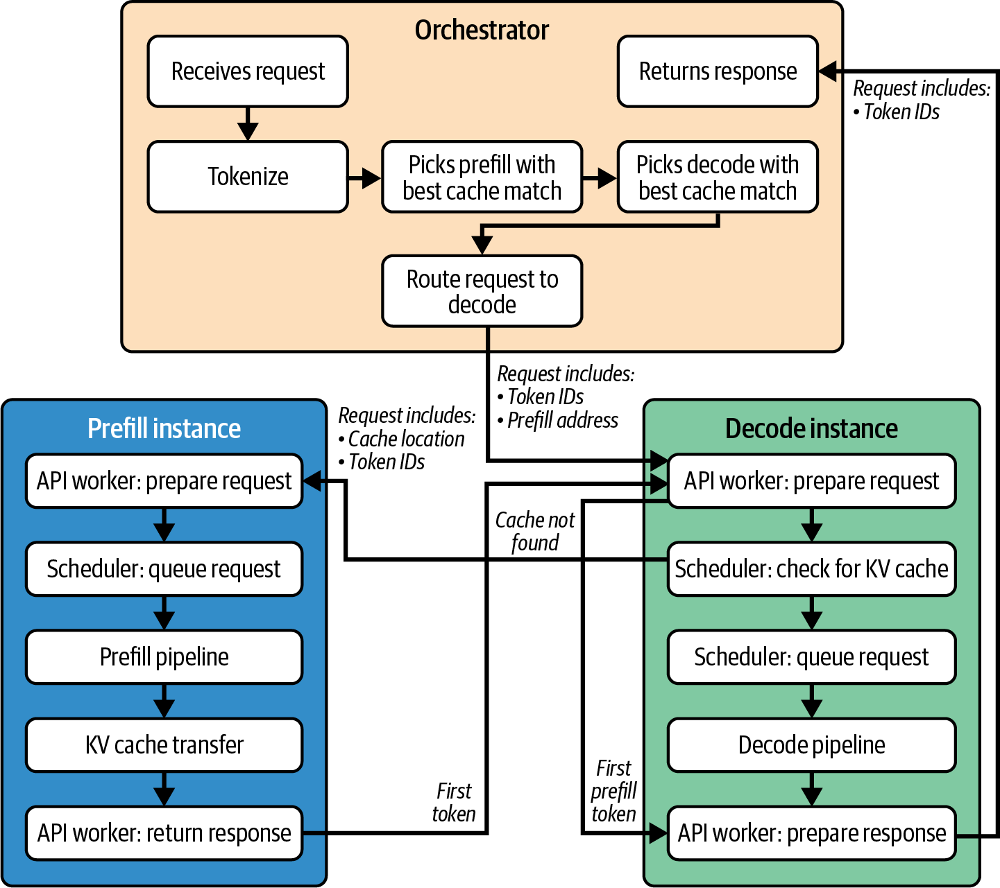
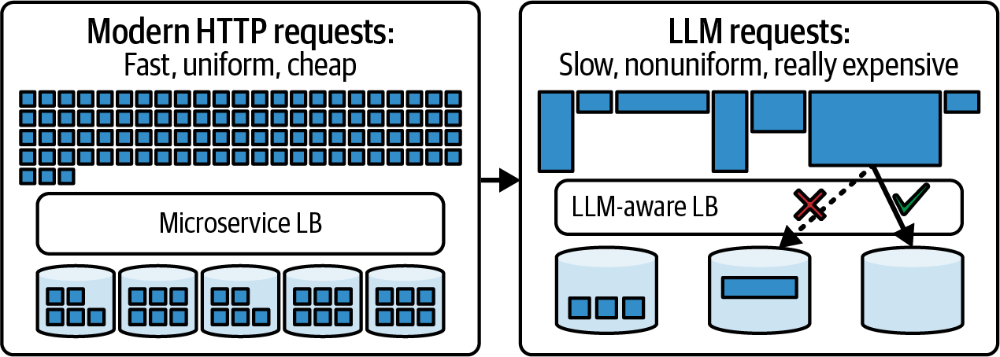
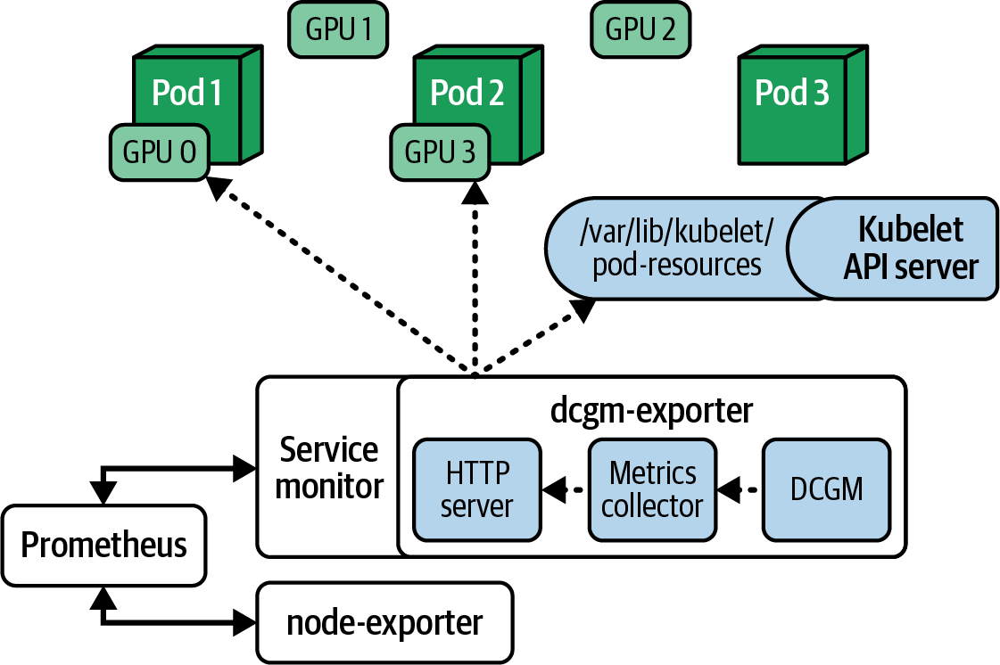
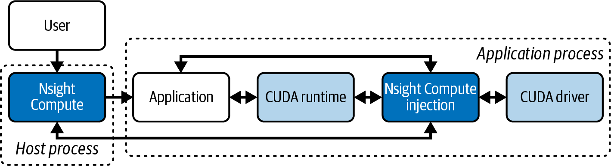
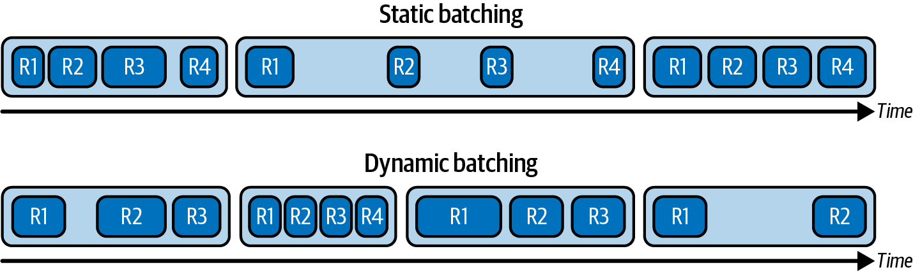
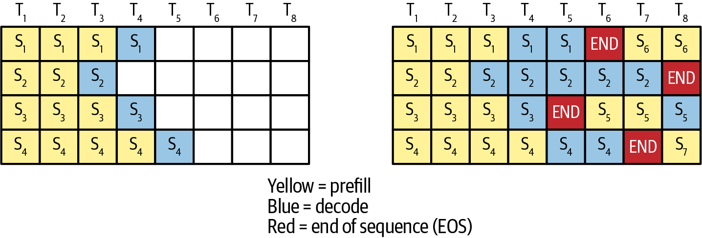
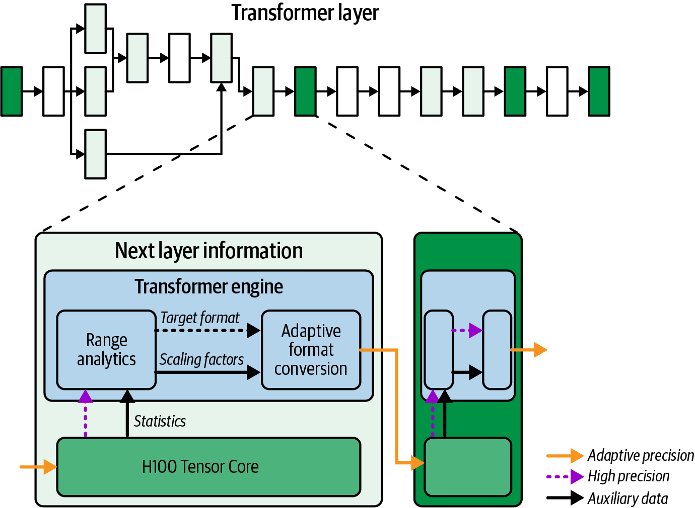
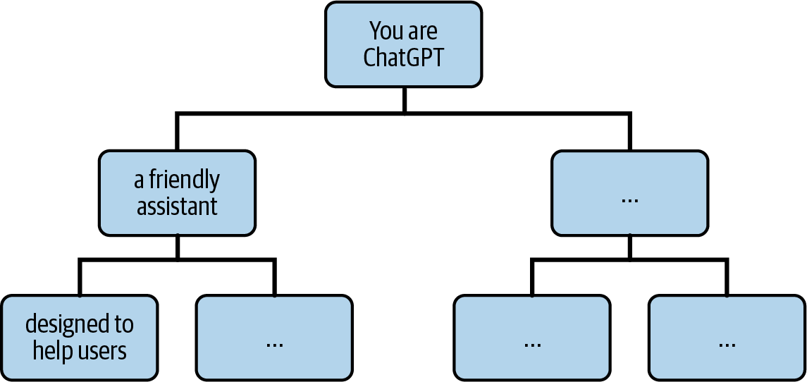
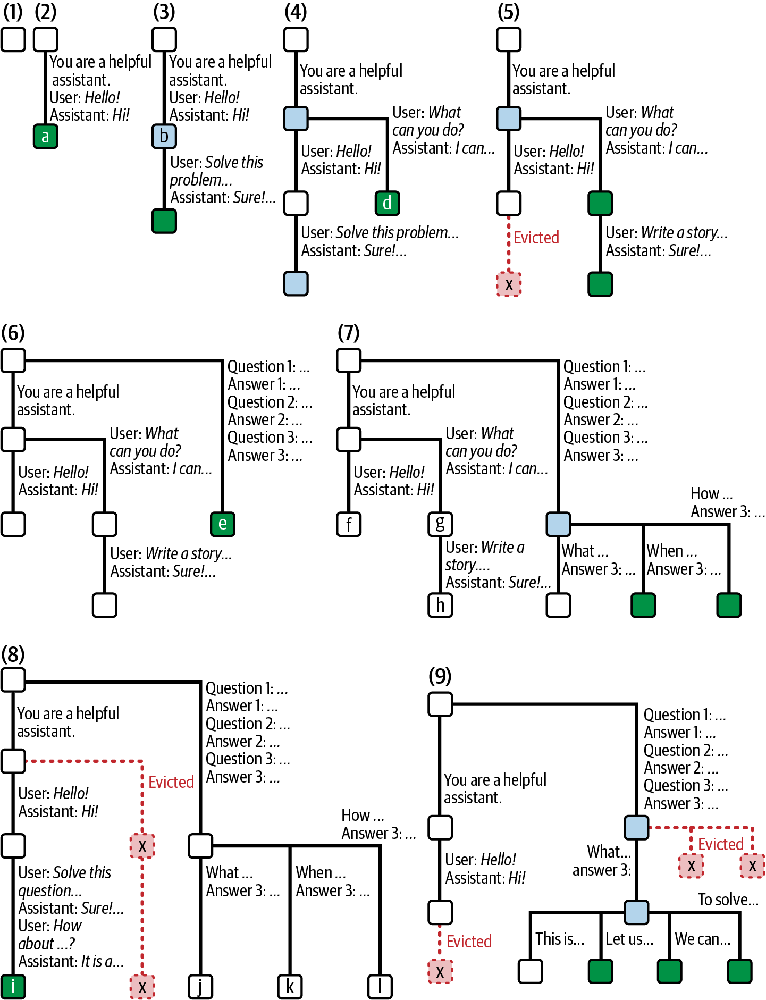
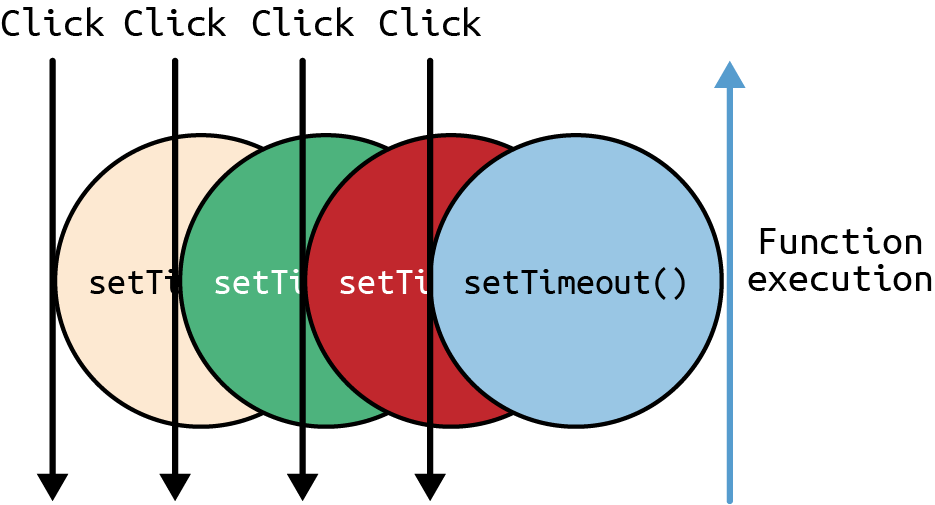

运营大型 LLM 推理集群需要借助监控和调试工具，确保一切按预期运行。当性能偏离目标时，这些工具还能帮助你快速找出瓶颈。
本章将演示如何使用 NVIDIA Nsight Systems 等性能分析工具以及 Prometheus/Grafana 等集群级遥测工具，监控和调试这些复杂系统。我们还会说明如何收集并解读 GPU 利用率、内存压力、尾延迟百分位数、缓存命中率、逐 token 耗时等关键指标。这些指标能够指导推理引擎的性能优化。
接下来，我们将讨论运行层面的性能调优，包括在生产环境中得到验证的多种方法，用于优化 GPU 利用率、缩短推理延迟并提高大型集群的吞吐量。其中包括重叠计算与通信、调度请求和组成批次，以及有效利用 NVLink、NVSwitch 和 InfiniBand 等高速互连。
我们还会比较用于推理的实时量化技术，包括使用广义训练后量化（Generalized Post-Training Quantization，GPTQ）和激活感知权重量化（Activation-Aware Weight Quantization，AWQ）等实现，将模型压缩到 8 位和 4 位精度的方法。在此过程中，我们会讨论仅量化权重与同时量化权重和激活值之间的权衡，并给出在服务流水线中应用量化的实践指导，以便在保持模型准确率的同时减少内存用量并提高吞吐量。
最后，我们将考察能够配合底层性能调优的应用层优化，包括提示词压缩、前缀缓存、去重、查询路由（例如使用后备模型）和部分输出流式传输等策略。
现代 LLM 推理引擎中有许多相互配合的组件，采用解耦式预填充和解码时尤其如此。一个典型请求的生命周期涉及许多组件，如图 16-1所示。

面对这样的复杂性，推理性能调优是一项高度迭代的工作，需要细致调节并持续验证。
首先，应观察指标并找出当前瓶颈，例如 GPU 未得到充分利用或延迟高于预期。接着提出改进假设，如“增大批大小”或“提高操作 X 的通信—计算重叠程度”。然后实施修复并检验这一假设。
之后，最好在预发布环境中使用具有代表性的工作负载测试修复方案，并借助性能分析工具验证更改是否符合预期。例如，可以验证某项操作是否正确实现了内存操作与计算的重叠。
最后，应将修复部署到生产环境，并监控 Grafana 和日志，以验证它是否改善了真实工作负载下的吞吐量和延迟。每当出现新瓶颈，就重复这一流程。
这种“观察—假设—调优”循环应持续进行。现代部署通常会自动执行这些步骤。例如，可以利用定期负载测试以及随后针对关键指标的异常检测来触发调优流程。
将优化部署到生产环境时，建议采用金丝雀发布，包括更新推理运行时和模型变体。先把优化应用于少量服务器承载的一小部分流量，便可在面向所有最终用户全面部署之前验证其效果。这种渐进式方法能够及早发现意外副作用，同时避免影响全部用户，从而缩小故障的“爆炸半径”。
设想这样一种场景：由于分词或推理数据预处理的工作量过大，主机端 CPU 利用率骤升至 100%。这会限制推理引擎能够处理的并发流数量。一种修复办法是使用 GPU 加速的分词器库，或使用 CUDA 或 OpenAI Triton 语言编写自定义 GPU 内核，把预处理迁移到 GPU。
部署新库或新内核后，应对比监控更改前后的 CPU 利用率。如果 CPU 利用率下降而总体吞吐量上升，就说明系统不再受基于 CPU 的输入预处理所限。
还应关注各种缓存的命中率，包括前缀缓存、提示词嵌入缓存和 KV 缓存。系统应提供“缓存命中”和“缓存未命中”指标。缓存命中率高，说明系统能够有效复用数据；反之，如果未命中率很高，通常就需要调整缓存大小、淘汰策略或缓存策略，以尽可能提高命中率。
vLLM 的 LMCache 组件支持调整 GPU 缓存与 CPU 缓存的比例。如果由于 GPU 内存限制而频繁未命中，可以启用其分页缓存卸载功能，让 CPU 分担缓存工作。务必确保缓存淘汰策略（最近最少使用 [LRU]、最不经常使用 [LFU] 等）符合实际访问模式。
另一种场景是使用 KV 缓存复用同一批请求中相同输入序列前缀的数据，从而避免重新计算该前缀的 KV。此时需要测量请求共享前缀的频率。共享前缀会产生一次前缀合并事件，并增加 vLLM 中的前缀缓存指标，包括 vllm:gpu_prefix_cache_queries 和 vllm:gpu_prefix_cache_hits。例如，可以用命中次数除以查询次数来计算命中率。
测量前缀合并率，有助于将其与实际缓存命中率关联起来，评估缓存层带来的真实收益。由此可以调整批处理和调度策略，尽可能增加共享前缀，并预测不同工作负载下端到端吞吐量和延迟的改善幅度。
可以让推理引擎运行合成数据，用包含大量重复前缀的提示词进行测试。如果前缀合并生效，预填充计算量应当有所下降。
vLLM 和 SGLang 等现代 LLM 推理引擎原生提供前缀合并相关指标。不过，如果推理引擎没有把前缀合并作为一等指标导出，就应插桩添加“前缀去重 token 数”的自定义计数器，以监控其效果。
如果前缀合并没有达到预期效果，应检查前缀匹配逻辑是否失效。调试时先检查分词器是否存在差异，因为这通常是前缀匹配问题的主要原因。
除了分析性能，监控还有助于容量规划。通过跟踪利用率和延迟随负载增长而发生的变化，可以推测系统何时会触及某项限制，例如 p95（第 95 百分位）延迟何时开始急剧上升。在这种情况下，动态批大小可能已经增大到边际收益递减的阶段。
如果采用分层缓存策略，包括基于 NVMe 的 KV 缓存扩展，务必监控设备的 I/O 延迟。I/O 延迟过高会显著降低缓存性能。
当单 GPU 并发度达到上限，继续增大批大小也无法提高吞吐量时，可以考虑横向扩展：增加 GPU、部署更多模型副本，或增加专家数量，把工作分散到更多计算单元上。
在横向扩展之前，还应考虑压缩模型或切换到较低精度（FP8/FP4），以提高每块 GPU 的有效吞吐量。不过，一旦硬件已经饱和（例如 SM 利用率达到 100%，内存带宽利用率接近峰值），要进一步提高吞吐量，通常只能增加 GPU，或采用张量并行/流水线并行。
同时务必权衡新硬件的成本与效率收益。有时，升级到内存容量更大、FLOPS 更高的新一代 GPU，会比横向扩展一批旧 GPU 更具成本效益。
增加专家数量可以提高吞吐量上限，但前提是同时改进专家路由和调度，以应对额外的全对全通信。否则，简单扩展可能只是把瓶颈转移到网络。下面讨论监控，以及如何验证优化工作是否真正取得了成效。
传统微服务调用的执行时间相对一致且可预测，而 LLM 请求并不均匀，延迟可能相差悬殊。图 16-2展示了这种差异。

在生产环境中进行持续监控时，通常使用 Prometheus 从各个 GPU 计算节点收集指标，再通过 Grafana 仪表板进行可视化。需要跟踪的关键 GPU 指标包括 GPU 利用率（SM 处于忙碌状态的时间百分比）、GPU 内存用量、复制引擎利用率、PCIe 和 NVLink 吞吐量，以及 GPU 温度和功耗（例如是否发生降频）。注意：L1/L2 活动、占用率和指令吞吐量等底层计数器，应使用 Nsight Compute 或 CUPTI 收集，而不是依赖 DCGM 和 Prometheus。
监控互连利用率同样重要，包括 NVLink、NVSwitch 带宽和 NIC 吞吐量。这样才能发现多 GPU、多节点集群配置中的通信瓶颈。
NVIDIA 数据中心 GPU 管理器（DCGM）公开了许多可供 Prometheus 抓取和收集的 GPU 指标。例如，DCGM 提供表示 SM 利用率百分比的 DCGM_FI_DEV_GPU_UTIL、表示内存复制引擎利用率的 DCGM_FI_DEV_MEM_COPY_UTIL，以及表示已用帧缓冲区内存的 DCGM_FI_DEV_FB_USED 等指标。
DCGM 提供 NVLink 错误计数器，并能在某些平台和驱动程序版本上公开吞吐量计数器。若要观察持续的链路利用率，还应使用 nvidia-smi nvlink 和 Nsight 工具。应把这些指标集成到仪表板中并设置告警，以便识别网络何时因跨 GPU、跨节点的通信流量而饱和。DCGM 还会跟踪 Xid 计数器和严重 GPU 错误。
虽然 DCGM 提供 NVLink 计数器，但截至本书写作时，dcgm-exporter 并不会默认在所有平台上公开逐链路带宽。因此，如果需要链路级吞吐量，可能需要直接查询 DCGM 或扩展 exporter。
还建议收集高层应用指标，例如每秒查询数/请求数、平均延迟和 p95/p99 延迟、活动上下文数量，以及以 token/s 表示的吞吐量。KV 缓存利用率和容量（总体及逐节点）也是极为重要的监控指标。
可以部署 Prometheus node exporter，从每个节点采集所有这些指标，把数据汇集到一处，甚至还能针对关键阈值设置告警。随后，Grafana 可以把这些指标绘制到实时仪表板中，供团队共享。例如，图 16-3展示了如何从 Kubernetes 集群的各个 GPU 收集指标、将其导出到 Prometheus，再使用 Grafana 进行可视化。
这样一来，例如部署旨在扩大批处理的新优化后，Grafana 会立即显示各 GPU 的利用率是否上升。还可以通过监控确认 p95/p99 延迟仍处于目标范围内。
计数器同样非常有用，尤其适合动态自适应系统。例如，如果推理引擎会根据当前条件动态调整批大小，就可以在每次调整时递增“批大小变更”计数器。

另一种选择是把变更写入日志文件，但之后需要进行缓慢的文本搜索和聚合，例如使用 Apache Spark 离线分析日志；随后还必须手动把日志分析结果与 Prometheus 指标关联起来。
如果为值得关注的应用层事件（包括错误）设置简单计数器并递增计数，数据就会推送到 Prometheus，并能与其他所有指标一起实时显示在 Grafana 仪表板中。此外，还应考虑对关键事件采用结构化日志和分布式追踪。
现代应用性能管理（APM）工具以及 OpenTelemetry 可以摄取这些日志和追踪，并将其与指标关联起来，从而提供覆盖整个系统、时间线一致的事件视图。掌握这条时间线有助于缩短性能问题的调试时间。
持续监控这些指标，就能判断下一步应在哪里调优。例如，如果 GPU 利用率低于预期，可以检查 GPU 内存是否已经用满。若尚未充分利用，则可尝试增大批大小或最大并发请求数。不过，务必留意延迟服务级别目标（SLO），不能超过这些目标。
相反，如果 GPU 内存接近上限，推理引擎可能开始把不活跃的 KV 缓存数据换出到主机 CPU 内存或 NVMe 存储。由于 GPU 必须等待来自较慢 CPU 内存或磁盘的额外数据传输，其利用率会随之下降。
如果发现 GPU 内存复制引擎利用率骤升，或在 SM 利用率较低的同时出现异常 NVLink 利用率，那么推理引擎很可能正在 GPU 内存中换入、换出 KV 缓存数据。过高的数据传输延迟会因此成为系统瓶颈。
如果确实发生了换页，可以调整推理引擎的分页参数以减少抖动，应用 FP8 或 FP4 量化，增加分配给缓存的 GPU 内存，并视情况改变换页策略。这样应能降低复制引擎利用率并提高计算利用率，这正是期望看到的结果。
Grafana 也可用于跟踪延迟。可以绘制端到端请求延迟的分布，通常还会分别测量预填充延迟和逐 token 延迟。如果 p99 延迟在某些时段骤升，应将其与 GPU 指标和其他日志进行关联分析。
例如，p99 延迟骤升可能与 GPU 利用率下降的时段相吻合。延迟峰值也可能对应某次流量激增：流量激增触发了更大的动态批大小，导致该时段延迟升高。为验证这一点，可以在 Grafana 仪表板的延迟图上叠加 RPS（每秒请求数），观察两张曲线图是否相关。
如果按照假设，峰值确实源于批大小的动态增加，而且属于预期现象，仍需确认它没有超出服务级别协议（SLA）。如果超出，可以尝试缩短请求批次的最大排队延迟，或减小最大批大小，以限制延迟。
日志对于诊断问题也极具价值。应在代码中插桩，记录批次形成、通信开始/结束等关键事件。最好使用 DEBUG 级别，以便按需启用或禁用，避免影响请求—响应延迟。
启用调试日志后，可以看到文本形式的逐步时间线。在一次调试过程中，通常会结合使用日志时间线和 Prometheus/Grafana 指标。例如，可以查看全对全通信耗时超过 5 ms 的频率。
结合日志时间线和指标，可以发现网络问题等异常值；这类问题可能拖慢某一轮全对全通信交换。如果问题持续发生，可以提高专家容量因子，让超额 token 自动溢出到第二专家副本；理想情况下，该副本应位于网络路径更稳定的 GPU 上。这样可以平衡负载并尽量降低延迟。
开发和调优推理代码时，可以使用 Nsight Systems 捕获横跨 CPU 和 GPU 的工作负载追踪。Nsight Systems 提供微秒级时间线视图，其中显示 CPU 线程、GPU 内核、CUDA 事件、NCCL 通信等活动。
通过在代码中加入 NVTX 标注，可以在时间线上清晰标出“预填充阶段”“解码步骤”或“全对全通信”等区间。下面的代码使用 NVTX v3 C API 的显式区间压栈和出栈操作，在示例预填充和解码步骤周围设置 NVTX 区间标记：
// Example C++ snippet with NVTX annotations using the C API.#include<nvtx3/nvToolsExt.h>// or <nvToolsExt.h>#include"my_model.hpp"// Your model’s C++ interface#include<vector>// Small helpers to keep callsites tidy.#define NVTX_PUSH(name, argb) \do { \nvtxEventAttributes_t a{}; \a.version = NVTX_VERSION; \a.size = NVTX_EVENT_ATTRIB_STRUCT_SIZE; \a.colorType = NVTX_COLOR_ARGB; \a.color = (unsigned int)(argb); \a.messageType = NVTX_MESSAGE_TYPE_ASCII; \a.message.ascii = (name); \nvtxRangePushEx(&a); \} while (0)#define NVTX_POP() do { nvtxRangePop(); } while (0)structToken{intid;};voidrun_inference(conststd::vector<Token>&prompt_tokens,Model&model,intnum_generate_steps){// PrefillNVTX_PUSH("Prefill",0xFF4F86F7);model.encode(prompt_tokens);NVTX_POP();// Decode one token at a timefor(intt=0;t<num_generate_steps;++t){NVTX_PUSH("Decode",0xFFFF8C00);Tokennext_token=model.decode_next();// ... (sampling / streaming to client)NVTX_POP();}}
这里使用 nvtxRangePushEx/nvtxRangePop 显式标记区间。在 model.encode(...) 之前立即压入 "Prefill" 区间，并在其后弹出；在 decode 循环中，每次迭代开始时压入 "Decode"，在 model.decode_next() 之后弹出。小型 NVTX_PUSH/NVTX_POP 辅助宏还会附加颜色（十六进制值）和文本。这既能减少时间线可视化中的标记错配，又能保持调用点简洁。代码中清晰可见的压入/弹出配对也便于审计。
这些彩色块标注会出现在 Nsight Systems 的 GPU 活动时间线上，并标记为 "Prefill" 和 "Decode"。这样很容易看出每个阶段持续多久，以及各阶段如何与通信操作重叠，从而发现 GPU 空闲间隙和意外同步等问题。
注意，这里直接使用 NVTX C API（nvToolsExt），而不是 PyTorch 的 record_function()。这样可以在纯 C++ 运行时中标注热点路径，并确保从 Python 或其他语言启动工作时标记保持一致。
将范围收紧到 model.encode(prompt_tokens) 周围所需的最小区间后，性能分析标记就能准确覆盖预填充工作，而不会包含其他代码。这会提高追踪的清晰度并改善性能诊断。
在多个 CUDA 流上排队工作时，应使用逐流区间（例如为 H2D/D2H 复制设置专用的“transfer”流，为内核设置“compute”流）。具体而言，可以用不同的 NVTX 区间包围每个流对应的主机端代码。
例如，可以使用 nvtxNameCudaStreamA(transfer_stream, "transfer_stream") 和 nvtxNameCudaStreamA(compute_stream, "compute_stream") 为流命名。然后，在内存复制/传输周围使用 nvtxRangePushA("transfer_stream") 和 nvtxRangePop()，在内核启动周围使用 nvtxRangePushA("compute_stream") 和 nvtxRangePop()。
使用带 NVTX 名称的流后，Nsight Systems 时间线会清楚显示操作是否发生重叠。下面的代码展示了如何把这些内容组合起来：
// One-time after creating the streamsnvtxNameCudaStreamA(transfer_stream,"transfer_stream");nvtxNameCudaStreamA(compute_stream,"compute_stream");// Around H2D/D2H copies (transfer stream)nvtxRangePushA("transfer_stream");cudaMemcpyAsync(h_logits,d_logits,bytes,cudaMemcpyDeviceToHost,transfer_stream);nvtxRangePop();// Around kernel enqueues (compute stream)nvtxRangePushA("compute_stream");my_kernel<<<grid,block,0,compute_stream>>>(...);nvtxRangePop();
这里为各个流命名，并用逐流区间包围排队点，使 Nsight 时间线保持易读。需要注意，NVTX 区间标注的是主机线程时间线；GPU 轨道则按流显示内核和 memcpy 操作。为流命名有助于在分析时把主机端区间对应到正确的 GPU 轨道。
Nsight Compute 可以分析单个内核，从而定位效率低下之处。可以利用 Nsight Compute 基于 section 的性能分析功能，专注于内核的特定部分，例如内存事务。
另一个非常有用但并不广为人知的工具，是 Nsight Compute 的 CUDA 程序计数器（PC）采样功能。如图 16-4所示，它可以采样程序计数器并识别热点，而不需要完整且开销很大的插桩。

具体而言，可以使用它分析正在运行的推理服务器，准确定位哪些内核指令耗时最多，而且开销很低。既然已经介绍了使用 Nsight Systems 和 Nsight Compute 进行性能分析，下面讨论一些常见的推理故障排查方法。
在对线上生产服务进行调查时，建议先使用程序计数器采样，以极低开销定位热点。只有当采样结果指向某个特定内核或阶段时，再切换到完整追踪。
在生产环境中，持续运行高开销性能分析器并不现实。因此，需要依靠轻量级、基于指标的监控来检测异常并指导针对性修复，例如 GPU SM 利用率、KV 缓存警告、尾延迟百分位数、缓存命中率和 OOM 告警。当某个指标越过特定阈值时，可以针对其根因形成假设，例如批大小过小、KV 缓存不足、路由热点、分片不均衡或内存超额分配等。
然后实施修复，例如调节批大小、提高内存利用率上限（如果可行）、调整路由器阈值或启用 CPU 卸载。推送修复后，应验证其影响，并确认指标已经回落到阈值以下。表 16-1列出了常见生产问题的一些关键指标、症状、可能原因和建议修复措施。
| 指标/症状 | 可能原因 | 建议措施 |
|---|---|---|
| SM utilization < 50% | 批次过小或缺少融合内核 | 增大批大小，启用融合内核（FlashAttention 或 PyTorch 中由 cuDNN 融合的 scaled_dot_product_attention（SDPA）后端），或添加自定义融合内核（例如使用 Triton）；然后用 nsys --trace=cuda 进行性能分析。 |
| KV 缓存抢占警告 | KV 缓存空间不足（vLLM） | 提高 GPU 内存利用率阈值，减少批处理中 token 的最大数量，并考虑使用 PagedAttention 动态分配 KV。 |
| 尾延迟高（p95 > 200 ms） | 解码节点热点或队头阻塞 | 检查路由器日志中的路由模式；调节预取阈值；启用推测解码路径。 |
| 负载下缓存命中率 < 60% | 分片放置不均衡或缺少前缀缓存 | 验证前缀缓存连接器配置（例如 vLLM 的 LMCache NIXL 和 NVIDIA Dynamo 的 NIXL 连接器），必要时增加前缀缓存 TTL 或副本数量。 |
| 多租户 GPU 上意外 OOM | GPU 内存超额分配 | 降低每个实例的 GPU 内存利用率，启用 CPU/NVMe 卸载，并将进程绑定到 CPU 套接字以减少跨套接字流量。 |
| 不规则的性能异常值 | 时钟不一致或温度降频 | 确保所有时钟同步，并监控温度和功耗降频。 |
注意：所有指标表中的数值仅用于说明概念。不同 GPU 架构上的实际基准测试结果，请参阅 GitHub 仓库。
部分信息也可能隐藏在日志文件中。AWS 等云服务商支持对日志文件使用正则表达式（RegEx）过滤器，从日志行中提取数值并直接导出为指标。例如，AWS CloudWatch 就支持这一实用功能。下一个代码块包含一些值得监控的日志示例。
下面是一段 vLLM 日志示例，它表示由于 KV 缓存空间不足而发生了 KV 缓存抢占。因此触发了 KV 重计算，这会占用更多 GPU 计算资源并增加延迟：
WARNING2025-05-0314:22:07scheduler.py:1057Sequencegroup0ispreemptedbyPreemptionMode.RECOMPUTEbecausenotenoughKVcachespace.total_cumulative_preemption_cnt=1
下面是 NVIDIA Dynamo 路由日志示例。第一行表示本地解码工作进程的前缀缓存命中率为 90%，因此预填充继续在本地运行；下一行表示本地缓存未命中。随后，路由器把预填充调度到远程的 GPU-node-03 工作节点：
[Router]2025-05-03T14:23:11ZINFOKVRouter:prefix-cachehit(90%)formodel=DeepSeek-R1;routingtolocalvLLMworker[Router]2025-05-03T14:23:12ZINFOKVRouter:cachemiss;dispatchingremoteprefilltoGPU-node-03
高性能 LLM 推理要求对技术栈的每一层进行协同优化，范围从模型架构和内核实现，一直到运行时引擎、系统编排和部署基础设施。
剪枝、蒸馏、稀疏性、MoE 路由、高效注意力（例如 FlashAttention）和量化感知训练等模型级技术，可以降低计算和内存需求。在内核层面，融合操作、自定义注意力引擎（例如 FlashInfer）、Tensor Core 利用、分块以及异步内存传输，有助于最大化 GPU 吞吐量。
动态批处理、分页 KV 缓存、CUDA Graph 以及计算与通信重叠等运行时策略，可以让 GPU 在负载变化时仍保持较高利用率。系统编排层可以采用预填充/解码解耦、智能路由、多租户隔离和自动扩缩容（配合热备用实例），以平衡延迟并提高成本效率。
最后，还应探索地理分布式边缘服务、智能 API 网关批处理、模型变体的 CI/CD 以及实时性能分析等部署模式。这些方法能够提高生产环境的可靠性和适应性。表 16-2介绍了技术栈各层的一些常见优化方法。
| 技术栈层 | 关键技术 |
|---|---|
| 模型 | 通过剪枝和知识蒸馏在尽量减少准确率损失的同时缩小模型规模 使用稀疏性（MoE）跳过计算 使用高效注意力（FlashAttention）减少内存占用和中间缓冲区 在 FP16/BF16 或 INT4/FP8 中进行量化感知训练，以增强低精度下的鲁棒性 |
| 内核 | 融合算子内核（例如 Linear + GELU + LayerNorm），减少启动开销和内存流量 用于块稀疏 KV 的自定义注意力内核（FlashInfer）和 JIT 编译内核 在矩阵运算中利用 Tensor Core 和专用指令（cp.async、TMA） |
| 运行时 | 采用 vLLM、SGLang 和 NVIDIA Dynamo 中实现的带延迟控制的动态批处理（例如连续批处理）来合并请求 使用分页 KV 缓存管理灵活分配内存并合并批次（vLLM 的 PagedAttention） 使用 CUDA Graph 和缓冲区池减少每次推理的开销 使用多个 CUDA 流（一个用于数据传输，另一个用于计算）来重叠计算与通信。采用基于事件的同步，并且只在需要时同步。 |
| 系统编排 | 预填充—解码解耦，以消除队头阻塞 智能路由和缓存亲和性，以平衡负载并提高缓存命中率 多租户隔离和逐用户配额，以防止嘈杂邻居影响 使用热备用实例自动扩缩容，隐藏模型加载时间；在流量激增时以略微增加成本换取显著更低的延迟 |
| 部署和基础设施 | 地理分布式和边缘部署，以减少网络 RTT 跨服务器池进行请求级批处理的智能 API 网关 用于以金丝雀模式推出新的量化或内核优化模型变体的 CI/CD 流水线 高带宽互连（NVLink/NVSwitch 和 InfiniBand），以及 GPU 与 CPU 之间的 NUMA 亲和性，以实现最佳内存访问 |
| QoS 和扩缩容 | 感知 SLA 的动态批处理和尾延迟控制 使用 MIG 或流优先级隔离 GPU，以实施 QoS 用于 TTFT、TPOT、利用率和内存带宽利用率的实时性能分析仪表板 根据工作负载特征动态切换并行策略（TP、PP、DP） |
进行优化时，必须考虑跨层协同效应。例如，量化（模型层）会减少内存占用，使运行时能够在不发生 OOM 的情况下使用更大的批大小，进而让编排组件在每个 GPU 周期合并更多请求。
还应以性能分析结果为依据。持续性能分析应指导下一步优化哪一层。例如，完成融合和量化后，如果 CPU 成为预处理和后处理的瓶颈，就应采用更快的分词器，或把部分任务卸载到 GPU。
应用优化总要权衡取舍。分层 CPU 卸载和高级解码方法等技术会增加复杂性。例如，推测解码需要增加草稿模型，Medusa 则增加多头并行解码。这些技术通常保留给超长上下文或延迟波动异常等极端场景；在生产环境中，稀疏性、批处理和解耦等较轻量的方法往往贡献大部分收益。
建议采用全栈优化方法，使模型架构、内核设计、运行时行为、系统编排和部署策略彼此协调。这意味着要及时更新软件栈，包括 CUDA、cuDNN、NCCL 等，因为新版本通常包含最新优化和错误修复。
为了在固定主机镜像上复现基准测试，应为原生扩展栈维护经过测试的兼容性矩阵，不要混用任意版本。这一点对于 PyTorch、服务引擎和自定义/原生扩展的组合尤其重要。在进行长时间的批量测试前，先运行一个小型导入冒烟测试。
全栈方法可以降低各层成为瓶颈的可能性。这样，团队就能系统地消除瓶颈，在大规模 LLM 推理中实现稳定的低延迟，并最大化硬件利用率。
监控也有助于发现由 bug 引起的异常。例如，如果内存用量持续增长，可能是 CUDA 内核发生了内存泄漏。建议在测试期间使用 Compute Sanitizer（compute-sanitizer），捕获设备内存错误、竞态条件和越界访问。示例如下：
compute-sanitizer--toolmemcheckyour_binary
如果某块 GPU 的利用率明显低于其他 GPU，它可能因 NCCL 静默失败或未捕获错误而退出 NCCL 通信组。可以在日志中搜索 WARN NCCL_COMM_FAILURE 来检查 NCCL 错误代码；NCCL 会提供非常详细的错误日志。
使用 NCCL 测试套件调试 all-reduce 和 all-to-all 的性能与正确性问题。还可以将 ncclCommGetAsyncError 与 ncclCommAbort 配合使用，以检测和处理异步通信错误。此外，可以启用 NCCL 的 IB GID 追踪，并利用 NVSwitch 系统遥测从互连层面发现问题。
应在 Prometheus Alertmanager 中设置告警，以检测诸如“GPU 利用率至少 60 秒低于 10%”“内存用量超过 W% 阈值”“NVLink 错误率高于 X”“PCIe 重放次数超过 Y 阈值”“温度高于 Z 度”等异常模式。
实践中，可以配置如表 16-3所示的 Prometheus Alertmanager 规则，以便主动调查问题。
| 指标 | 条件 | 严重性 | 备注 |
|---|---|---|---|
| GPU 利用率 | < 10% for > 60 s | 空闲 | 利用率不足 |
| GPU 利用率 | > 90% | 瓶颈 | 可能已饱和 |
| 内存用量 | > 80% | 警告 | 接近 OOM |
| 内存用量 | > 95% | 严重 | 内存不足错误风险高 |
| 温度 | > 85 °C | 警告 | 接近温度降频 |
| 温度 | > 95 °C | 严重 | 存在关机或硬件损坏风险 |
| NVLink 重放/恢复错误 | ≥ 1 | 严重 | 表示链路正在重试或恢复 |
| NVLink CRC 错误 | > 每秒 100 个错误 | 严重 | 链路 CRC 失败率高 |
| PCIe 重放错误 | ≥ 1 | 严重 | PCIe 总线上的数据包重试 |
| 不可纠正的 ECC 错误 | ≥ 1 | 严重 | 数据损坏，需要重置 |
还应设置硬件错误计数器和告警。例如，一旦报告 ECC 错误或 NVLink 重试，就应立即告警，因为这些问题可能迅速降低性能或导致掉线。掉线是指 GPU 或其互连静默断开；例如，NVLink 可能断开，或者 GPU 在发生致命错误后“从总线掉出”。
可以使用 DCGM 获取逐链路 NVLink 吞吐量和总量，包括 DCGM_FI_DEV_NVLINK_TX_BANDWIDTH_L*、DCGM_FI_DEV_NVLINK_RX_BANDWIDTH_L* 和 *_TOTAL。如有需要，再使用 nvidia-smi nvlink、Nsight Systems/Compute 或 NVSwitch 计数器作为补充。
考虑一种 NCCL 故障：你可能收到告警，显示某个节点的 GPU 利用率接近 0%，而其他节点达到 90%。可以先检查节点日志，找出哪个节点正在产生 NCCL 错误。
这种主动监控和告警能更快捕获问题、找到故障节点并开始恢复。在这种情况下，可以重新初始化 NCCL 通信器，或完整重启节点（务必确认节点重启后重新加入 NCCL 组）。
还可以为 NCCL 错误递增“NCCL Error”计数器，从而更快捕获问题。此外，推理服务器可以记录 NCCL 错误，Fluentd 或 AWS CloudWatch 会自动抓取这些日志并将其转换为计数器。
随后，可以在 Grafana 中把错误计数器图表叠加到逐节点 GPU 利用率图表上。这样就能将 NCCL 错误与 GPU 利用率下降关联起来，更快识别并修复故障节点。
应用层计数器在生产环境中非常有用，尤其是与系统指标结合使用时。
在通过实际指标验证吞吐量提高、延迟降低、利用率改善等结果之前，不能认为优化已经成功。现代 AI 推理系统十分复杂，因此必须采用严格、以测量为驱动的方法调优系统性能。
简而言之，应结合应用层计数器、由 Fluentd 或 AWS CloudWatch 自动抓取的日志计数器，以及底层系统指标。这种全栈遥测为在生产工作负载上运行和优化高性能多节点 LLM 推理系统提供必要的可见性。应把指标、计数器和日志视为系统行为的事实依据。
即使已经在集群中对模型进行了最佳划分和并行化，多节点推理集群部署仍有许多应用层优化机会。本节聚焦于动态组成请求批次，并使用优化的调度和路由策略，以最大化 GPU 利用率、最小化延迟并提高吞吐量。
推理服务系统中最强大的性能技术之一是批处理。将多个输入合并为一个批次，让模型一起处理，可以把内核启动、内存加载等固定成本分摊到多个输入上，从而提高吞吐量。但代价是单个请求的延迟增加：某些请求可能需要等待一段时间（例如 2 ms）才能加入批次并得到处理。
动态批处理是请求批处理的一种特化形式，会即时将到达的推理请求组成大小动态变化的批次。可以配置为在一段时间内缓冲请求，或缓冲到达到指定批大小为止。所有现代 LLM 推理引擎都支持动态批处理，包括 vLLM、SGLang 和 NVIDIA Dynamo。
动态批处理与静态批处理相反：静态批处理固定批大小（或将所有序列填充到最长序列的长度），并等待该批次中的每个请求完成后才返回结果。这会让先到达的请求遭遇无界排队延迟，还会因填充而浪费 GPU 周期。
使用动态批处理时，系统会累积到达的请求，在达到目标批大小或短暂超时（例如 2 ms）后，立即调度“已经到达的所有请求”。这样可以把最大延迟限制在指定的超时值以内。
动态批处理能够即时调整批大小，把内核启动开销分摊到多个序列，同时避免静态批处理的最坏情况延迟。这既提高 GPU 利用率，也让可变负载下的延迟更可预测。图 16-5展示了静态批处理和动态批处理的差异。
动态批处理可以根据实际请求到达模式和延迟目标（例如最大延迟）自动增大或缩小批大小。关键是智能组批，在提高总体吞吐量的同时把延迟维持在可接受范围内。现代推理引擎会实现微批处理，只累积几毫秒请求就将批次调度到 GPU。通常使用 2～10 ms 的延迟，但仍应根据延迟 SLO 调整。

例如，可以将批延迟配置为 2 ms，用来决定服务器在调度批次前等待额外请求的时间。如果这段时间内到达三个请求，批处理器会立即将它们组成一批并发送到 GPU。2 ms 计时器到期后到达的请求，则会被收集到下一批。这个由超时触发的机制将每个请求的排队延迟限制在不超过 2 ms，同时通过合并多个序列提高吞吐量。
这些微批次减少了额外延迟，并让 GPU 一次处理多个请求，而不是一次处理一个。大型 LLM 在批大小较小时通常受内存带宽限制，因此增大批大小可以提高算术强度和总体硬件利用率。
实践中，LLM 服务系统会选择平衡的批大小，在不引入过多延迟的情况下获得良好吞吐量。在高负载下，动态批处理可以避免 GPU 在请求之间空闲，因而可能同时改善吞吐量和排队延迟。当请求到达率较高且系统尚未超过饱和点时，批处理能够在相同时间内处理更多工作，减少总体排队等待，有利于端到端延迟和尾延迟；超过膝点后，延迟反而会快速上升。
在低 RPS（每秒请求数）下，动态批处理会等待其他请求加入批次，因此会增加少量延迟。在中高 RPS 且容量充足时，这段等待可由更高处理效率分摊；相对于逐个运行请求造成的排队延迟，它可能较小。因此，适当批处理可以降低总体延迟，包括尾延迟，但效果必须在实际负载曲线上验证。
应使用 Grafana 等工具绘制延迟百分位数随负载变化的曲线，验证改进效果。采用批处理后，随着吞吐量提高，总体 p50 延迟可能保持平稳甚至下降，但通常只持续到某个拐点。应记录这个拐点，并把运行状态保持在其下方。
配置批处理时必须考虑延迟 SLO。例如，如果承诺某种长度请求的 p99 延迟为 2 秒，就不能让请求在批队列中等待 500 ms。动态批延迟的初始值应远低于 p99 延迟预算；1～2 ms 只是可供基准测试的起点，需按服务目标和到达模式调节。
采用自适应批延迟后，在低 RPS 下，批延迟可以动态降至接近 0 ms；在峰值负载下有需要时，可以提高到例如 5～10 ms。具体引擎的调度语义和参数并不相同，应根据流量模式闭环调整，以满足 SLO。
批处理主要适用于高流量场景。流量低时，系统会直接运行单个请求，延迟很低；但在高负载下，系统可以采用积极的批处理来获得高吞吐量，并通过避免队列堆积、在多个请求之间分摊延迟，改善总体延迟。
连续批处理也称为在途批处理或迭代级调度，它不等待完整序列结束，而是在每次 token 生成迭代时重新填充批次，以保持较高 GPU 利用率。它会驱逐已完成的请求，并根据 GPU 是否就绪立即加入新请求。这项技术对于聊天助手等低延迟场景尤其重要。
与动态批处理等由超时驱动的方法不同，事件驱动的连续批处理策略消除了空闲计算槽位以及这些方法带来的填充开销。连续批处理不依赖固定的“最大延迟”计时器，因此允许新请求在生成中途加入正在运行的批次，也不会被最长序列阻塞，如图 16-6所示。

这里，连续批处理最大限度减少了推理计算流水线中的空闲槽位。它消除了每个批次等待最长响应完成所造成的空闲时间。连续批处理不等待批次中的所有序列结束（由于输出长度不同，这样做效率低且会导致 GPU 利用率不足），而是在每次迭代用新序列替换已完成的序列。这种方法允许新请求立即填充 GPU 槽位，从而提高吞吐量、降低延迟并提升 GPU 利用率。
在大型模型上，将 4～8 个请求组成批次，吞吐量常常可以达到 1～2 个请求批次的两到三倍，但实际增益取决于模型、硬件、序列长度和调度实现。这是因为 GPU 的数学单元和内存流水线得到了更充分利用。每个请求增加的延迟通常只有几毫秒，因此这种策略适合低延迟场景。表 16-4总结了前面讨论的不同批处理策略，包括朴素的静态批处理策略。
| 方面 | 静态批处理 | 动态批处理 | 连续批处理 |
|---|---|---|---|
| 触发条件 | 固定批大小或序列长度 | 批大小目标或超时 | token 生成完成事件 |
| 延迟上限 | 无界；等待完整批次 | 受 max_batch_delay_ms 限制 |
极小；在批次中途驱逐并重新填充 |
| 填充开销 | 高：填充到最长序列 | 中等：在每个批次内填充 | 低：无需等待填充即可重新填充槽位 |
| GPU 空闲缓解 | 差：尤其是在大小可变的负载下 | 较好：但计时器在小批次上触发时可能让 GPU 空闲 | 优秀：每次迭代都让 GPU 保持饱和 |
| 实现 | 简单 | 中等：需要计时器和队列管理 | 复杂：需要逐 token 协调和状态跟踪 |
请求调度的另一个维度是并发执行模型。vLLM 社区将其称为连续调度。其基本思想是：如果模型较小，或批大小受到延迟目标限制，单个模型实例可能无法让 GPU 完全饱和。
连续调度对待 GPU 的方式类似于操作系统调度器对待 CPU：在不同 CUDA 流上启动相互独立的小内核。这样，硬件 warp 调度器便能在任务之间交错调度 warp，而无须显式上下文切换。
例如，如果推理引擎未能让 GPU 完全饱和，就可以在同一 GPU 上并发运行多个模型推理流。这样，当一个实例等待数据传输或非 GPU 操作时，另一个实例便可执行。
具体来说，在解码阶段一次生成一个 token，往往会使 GPU 利用率不足，尤其是只处理单个文本序列时。这是因为工作负载相对较小，并且相对于计算量而言需要移动大量内存数据。
为解决这一低效问题，推理引擎可以交错执行来自不同用户请求的多个解码任务。例如，如果 10 个用户同时解码不同序列，不能总是直接把它们组成一次大型矩阵乘法，因为各序列长度可能不同；若不进行大量填充，GPU 就难以高效执行这种统一矩阵运算。
连续调度器可以改为在不同 CUDA 流上快速连续启动 10 个小型解码内核，分别为每个序列生成下一个 token。借助 GPU 的细粒度 warp 调度器，不同序列可以真正并发，内核的 warp 会在各个 SM 上交错执行。这种近似轮询的处理模式有助于减少空闲周期。
把每个解码任务排入各自的流后，GPU 可以在不同序列之间重叠内存传输和计算，从而缩短逐 token 延迟并提高总体吞吐量。
GPU 在 warp 级别交错调度这些内核。当某个解码内核因 CPU 端控制流低效或等待网络 I/O 而无法继续提交工作时，其他已就绪内核仍可推进。这有助于提高 GPU 利用率，但实际并发程度仍受资源占用、依赖关系和硬件调度限制。
连续调度维护一个已就绪 token 任务队列，即使在 token 级粒度上也能获得较高利用率。最终效果类似于批处理：GPU 持续执行 token 生成，但不必把所有工作合并成一次巨型矩阵乘法；关键是避免 GPU 在相邻 token 计算之间空闲。这种 token 级细粒度调度有助于提升大规模用户服务的吞吐量。
在固定时间间隔，或每当 GPU 空闲时，连续调度器会把所有待处理的下一 token 请求组成大小可配置的批次，再以一次 GPU 调用调度该批次。这有助于平衡吞吐量与延迟。
设计自定义调度器时，可以考虑混合方法：为 token 调度同时设置短计时器和最大批大小。
vLLM 和 SGLang 等先进系统将动态批处理与连续调度结合起来。其自定义连续调度器的核心思想，是尽量消除 GPU 时间线中的“气泡”。
vLLM 的 PagedAttention 是这种混合方法的一个具体示例。PagedAttention 将注意力键值（KV）缓存划分为片段或页，并在活跃序列之间动态组织与页面相关的计算。通过交错执行大型预填充 GEMM 和快速的小型解码内核，它可以在合适的高负载工作负载下获得很高的 GPU 利用率；原文所称“接近 100%”并非跨硬件与负载的普遍保证。
vLLM 使用块级 KV 缓存结构分别跟踪每个请求的状态。这种细粒度记账方式通过实时、持续地装填和多路复用工作负载，支持快速流式响应并改善硬件利用率。
另一个示例是 SGLang 的 RadixAttention，它使用基于树的 KV 缓存组织方式，并对未使用的缓存页采用惰性淘汰。在合适的高负载条件下，它同样可以获得很高的 GPU 利用率，但不能把“接近 100%”视为通用结果。稍后将更详细地介绍 vLLM 的 PagedAttention 和 SGLang 的 RadixAttention。两者均为开源实现，因此可以直接查看其调度代码。
当提示词极长时，可以把它拆成多个区块，交错执行预填充和解码工作。这称为无停顿调度或分块预填充。
考虑一个包含 20K token 的提示词。将其拆分为 5K token 的区块，可以降低每次迭代的最大停顿，并把每次迭代的工作量限制在固定 token 数，从而获得可预测的迭代延迟。不同区块大小下的分块预填充成本见表 16-5。
| 区块大小 | 区块数量 | 每个区块的注意力操作数 | MLP token 总数 |
|---|---|---|---|
| 20K | 1 | 20K × (20K + 1) ÷ 2 = 200M | 1 × 20K = 20K |
| 10K | 2 | 50M + 150M = 200M | 2 × 10K = 20K |
| 5K | 4 | 12.5M + 37.5M + 62.5M + 87.5M = 200M | 4 × 5K = 20K |
由于 KV 缓存，每个区块的注意力成本会随完整上下文增长。每个新区块都要为自身 token 计算注意力，并与前面区块中的全部 token 进行比较。
在自注意力中，长度为 N 的序列所需 QK 点积数量呈三角形增长，约为 N(N + 1) ÷ 2。这表示每层每个头的 Q × K 点积操作数，成本关于 N 呈二次增长（O(N2)）。因此，当 N = 20,000 时，约有 2 亿次操作。分块不会减少总量，只会改变工作何时可供解码器使用。分块预填充的收益在于平滑延迟和改善重叠，而不是减少注意力点积操作总数。
预填充自注意力在每层每个头上执行 N(N + 1) ÷ 2 次 Q × K 点积，成本关于 N 呈二次增长，即 O(N2)。请注意，分块和流水线预填充只会改变重叠关系与延迟，不会改变注意力工作的总量。要降低注意力总成本，只有减少有效上下文，或使用局部注意力/稀疏注意力。例如，使用固定注意力窗口 W 可将成本降至 O(NW)。
简而言之，分块预填充以紧密交错的方式调度提示词预填充和 token 生成，将大批量预填充计算的高效率与流式解码的响应性结合起来。在许多工作负载下，它可以降低尾延迟，同时保持较高吞吐量。
延迟感知调度可以分析到达的请求，创建动态批次并进行路由，以尽量降低延迟。假设六个提示词同时到达一个双 GPU 推理系统，其长度依次为 6K、2K、6K、2K、2K 和 2K。下面比较朴素的先进先出（FIFO）调度器与延迟感知调度器。
首先，FIFO 调度器根据到达顺序创建两个批次。批次 1 为 [6K, 2K, 6K]，发送到 GPU 1；批次 2 为 [2K, 2K, 2K]，发送到 GPU 2。结果汇总于表 16-6。
| GPU | 提示词批次 | 自注意力 QK 操作数 T(N) = N(N + 1) ÷ 2 | token 数 N |
|---|---|---|---|
| GPU 1 | 6K, 2K, 6K | T(6K) + T(2K) + T(6K) = 18,003,000 + 2,001,000 + 18,003,000 = 38,007,000 | 14K |
| GPU 2 | 2K, 2K, 2K | 3 × T(2K) = 3 × 2,001,000 = 6,003,000 | 6K |
可以看到，FIFO 策略把前三个提示词 [6K, 2K, 6K] 发送到 GPU 1，约需执行 38,007,000 次自注意力 Q × K 点积，并处理 14,000 个 MLP token；GPU 2 则约需执行 6,003,000 次自注意力 Q × K 点积，并处理 6,000 个 MLP token。关键路径由 GPU 1 决定，约为 38,007,000 次自注意力 Q × K 点积。
相比之下，延迟感知调度器分析六个请求的预期延迟，将其重新排列为两个 [2K, 2K, 6K] 批次。在这种策略下，每块 GPU 的自注意力成本均为 22,005,000 次点积，并处理 10,000 个 MLP token，如表 16-7所示。
| GPU | 提示词批次 | 自注意力 QK 操作数 T(N) = N(N + 1) ÷ 2 | token 数 N |
|---|---|---|---|
| GPU 1 | 2K, 2K, 6K | T(2K) + T(2K) + T(6K) = 2,001,000 + 2,001,000 + 18,003,000 = 22,005,000 | 10K |
| GPU 2 | 2K, 2K, 6K | T(2K) + T(2K) + T(6K) = 2,001,000 + 2,001,000 + 18,003,000 = 22,005,000 | 10K |
在这个简化成本模型中，关键路径上的自注意力工作量从 38,007,000 降至 22,005,000，减少约 42%。因此，延迟感知调度器有可能显著缩短 TTFT。由于它会考虑提示词长度、自注意力中呈三角形增长的 N(N + 1) ÷ 2 成本，以及 MLP 的 O(N) 成本，因此能够平衡计算权重并尽量降低总体延迟。例如在本例中，延迟感知调度器把 2K token 请求提前，使这些较轻的请求更早完成预填充并开始解码，而无须等待较重的 6K token 预填充完成。
这些计数假设采用只计算有效 token 的变长融合注意力内核，例如 FlashAttention，或使用 cuDNN 后端的 PyTorch scaled dot product attention（SDPA）。如果内核把序列填充到批次中的最大长度，那么注意力算术成本将接近批大小乘以该批次最长序列的 T(N)。在这种情况下，FIFO 与延迟感知策略之间的差异会缩小。
简而言之，如果批次中的到达顺序从全局角度看并不理想，朴素 FIFO 调度器可能使某块 GPU 负载过重。延迟感知调度器可以分析到达的请求，把它们重新排列成更加均衡的批次，以尽量降低延迟。
系统级优化技术包括重叠通信与计算、提高 GPU 利用率、管理功耗与热约束、处理错误，以及优化内存访问。总体目标是尽可能提高 GPU 执行有用工作的比例，即 goodput，而不是机械追求 100% 的繁忙率。本节还讨论吞吐量与延迟之间的权衡，以及如何找到适合生产 SLO 的平衡点。
正如本书多次所述，对于分布在多块 GPU 上的大型模型，重叠通信与计算是推理性能的关键。GB200/GB300 NVL72 等系统具有极高带宽（机架内 GPU 到 GPU 的 NVLink 聚合带宽最高约 130 TB/s），数据传输足够快，计算不易因等待数据而断粮，因此重叠更加有效。不过，即使使用 NVL72，也必须采用多个 CUDA 流和非阻塞 collective，以隐藏延迟，让全部 72 块 GPU 保持忙碌——即使在这种带宽下也一样。
实践中，可以启用 NCCL 的 GPUDirect RDMA 支持——并使用 NCCL group 调用重叠多个小型 all-reduce 操作。此外，可以考虑使用 SHARP（在配备合适交换机的 InfiniBand 上可用），把归约操作卸载到网络结构中。这种优化在某些网络结构和拓扑上能够提高吞吐量；一些测试显示，大型 all-to-all通信的吞吐量约提升 10%～20%，但结果取决于具体配置。
考虑一个需要在 GPU 之间传输数据的推理步骤（例如 MoE 的 all-to-all），或者仅仅是把提示词数据从 CPU 发送到 GPU，再把响应从 GPU 返回 CPU 以交付最终用户。在所有这些场景中，只要可能，就应在 GPU 执行其他工作时异步进行传输。
一个基本示例是使用独立 CUDA 流重叠计算与数据传输。例如，在专用传输流（配合页锁定主机内存）上启动 cudaMemcpyAsync，同时让计算内核在默认流上运行。
通过 PCIe 或 NIC 传输时，务必使用页锁定主机缓冲区。这样 CUDA 驱动就能直接执行 DMA，并与计算重叠。
随后只在真正需要数据时使用 CUDA event 同步，避免 GPU 因 I/O 空闲。这样，数据传输使用非阻塞 CUDA 调用（例如配合页锁定内存）和 CUDA 流，GPU 不会停下来等待这些操作。在具备全双工 NVLink 带宽的现代 GPU 上，这种重叠可以大幅隐藏通信延迟；不过，仍应针对具体工作负载进行性能分析验证。
此处的数据传输可以包括把新的提示词嵌入从 CPU 发送到 GPU，或把最后一个 token 的 logits 从 GPU 移到 CPU。例如，GPU 计算出一批新 token 的 logits 后，可以立即异步把 logits 复制到 CPU 进行后处理（例如采样），或作为流式响应返回客户端；与此同时，立即启动下一个计算内核，处理仍在 GPU 上的另一批 token。
在多节点场景中，可以把工作拆成区块，使 all-to-all 等通信 collective 与计算重叠。一些 MoE 运行时会把 token 批次拆成两半：专家处理前一半 token 时，同时开始发送后一半 token。
专家处理完前一半时，后一半数据已经到达目标 GPU，因而无需等待即可继续。这要求相对于计算内核谨慎安排 NCCL 调用。
例如，可以使用 CUDA event 指示批次的一半何时完成；此时启动该部分数据的 NCCL all-to-all，同时让下一部分继续计算。还可以使用 CUDA Graph 捕获这些异步模式，降低启动开销。由于 GPU 等待通信的空闲时间减少，利用率会得到改善。
另一个可以重叠的领域是 CPU 与 GPU 之间。例如，GPU 忙于生成下一个 token 时，CPU 可以并发准备下一个输入，或处理之前生成的 token 的结果。高度优化的推理引擎会让 CPU 端预处理（例如输入文本分词）与其他请求的 GPU 计算并行进行。例如，引擎可以准备下一批，同时与当前批的 GPU 计算重叠。
这听起来显而易见，但需要多线程架构：一个线程处理网络和排队，另一个线程启动 GPU 操作，还可以有另一个线程负责响应后处理等。Python 或 C++ 推理循环不应因等待本可并发执行的操作而阻止 GPU 启动新工作。
在流水线并行场景中，系统应让通信（流水线阶段之间）与每个阶段内部的计算重叠。例如，GPU 0 完成 token t 的部分工作后，可以向 GPU 1 发送激活值，同时开始为另一个序列处理 token t+1。
只要使用的是不同资源，现代互连和框架就允许计算内核与数据传输重叠。应在推理流水线中使用多个 CUDA 流，让每个流水线阶段拥有独立流。这样，激活值的发送/接收就可以与其他流中针对不同微批次的计算并行进行，从而减少流水线气泡。
在网络方面，NVIDIA GPUDirect RDMA 等技术允许 InfiniBand NIC 直接读写 GPU 内存，无须 CPU 参与，也不需要经过主机内存中转。利用 GPUDirect 跨节点传输 KV 缓存或专家激活值，可以降低延迟和 CPU 开销。
GPUDirect RDMA 去除了经由主机内存中转的步骤，使 NIC 的 DMA 引擎能够直接访问 GPU 内存。CPU 负责提交工作请求，但数据路径绕过 CPU，从而释放 CPU 核心执行其他任务。
考虑一个实际示例：使用 InfiniBand 在两个 NVL72 机架之间实现 MoE 层的 all-to-all 通信。如果先同步执行 all-to-all，再进行计算，在没有重叠时 GPU 利用率可能很低；但如果把 all-to-all 通信批次与计算重叠，就能显著提高 GPU 利用率。
在 MoE 层重叠 all-to-all 通信，需要把 token 批次拆成两半，并在第一半 token 的专家仍在计算时开始交换第二半。这样便可把通信延迟隐藏在交错的计算中。
基本做法是：每块 GPU 先为已经拥有的 token 计算本地专家输出，同时接收另一节点发来的剩余 token。完成第一批时，第二批已经到达，可以立即开始计算。
这种优化相当底层，涉及 NCCL group 与 CUDA 流之间的 CUDA event 同步，但能够带来可观的吞吐量改善和更平滑的延迟。实践中，先把 NCCL all-to-all 作为 NCCL group 的一部分启动，不等待其完成；然后立即启动下一个计算内核，并使用 CUDA event 检查完成状态。
对于流式输出，还可以让 I/O 与计算重叠。例如，一旦生成了几个 token，就通过套接字发送给最终用户，同时模型已经开始处理后续 token。这样就能把网络延迟（例如把响应发回用户）隐藏在计算（例如生成后续 token）之后，使用户看到没有停顿的稳定流。
所有现代 LLM 推理引擎都采用这种向客户端非阻塞流式传输的模式，使用独立线程通过 SSE/WebSockets 发送 token 更新。
如果自行实现流式输出，务必使用线程安全队列或锁，把生成的 token 交给网络线程。不要在交接过程中引入同步问题，这类问题往往很难定位和调试。
如果不进行重叠，系统会先生成少量 token，然后在把 token 发回最终用户时让 GPU 空闲。更好的做法是由异步 I/O 线程从响应缓冲区取出输出并流式返回用户，使推理调度线程能够继续提交更多 token 生成工作。这样就把 token 生成（计算）与输出传输（I/O）组成流水线。需要注意，主机线程与 CUDA 流是不同概念。
简而言之，重叠通信与计算需要用流水线思维，并尽可能使用异步操作。现代 GPU 和网络硬件提供了相应原语，包括 CUDA 流、非阻塞 collective 和 RDMA。在内核内部，CUDA 设备端原语（例如与 cuda::barrier 配合使用的 cuda::memcpy_async，后者来自 CUDA pipeline 头文件）有助于让全局内存到共享内存的移动与计算重叠。（注意：主机到设备以及设备到主机的传输，仍需显式 CUDA 流和页锁定主机内存才能与计算重叠。）高效的 LLM 推理系统会充分利用这些特性。
简而言之，只要可能，就应始终让通信与计算重叠。否则，即使采用 NVLink/NVSwitch，扩展到许多 GPU 时仍会低于硬件峰值性能。这些优化通常对最终用户不可见，因为模型输出不会改变；但它们对于榨取推理集群的每一点性能、保持用户对应用的体验至关重要。
性能调优的最终目标是让 GPU 尽可能忙于执行矩阵乘法等有用工作，同时尽量减少空闲和未充分利用的 GPU 资源。前面介绍的批处理、并行和重叠等技术，都是为了实现接近 100% 的 GPU 利用率。
GPU 利用率百分比，尤其是有用利用率（goodput），是需要持续监控的重要性能指标。虽然希望有用利用率达到 100%，但必须确保不违反延迟等 SLO。利用率提高到某个程度后，可能会出现收益递减。
假设一个采用朴素实现的推理服务器当前 GPU 利用率为 60%。调查发现，解码阶段受单线程顺序处理所有序列所限，形成瓶颈。引入使用多个流的并发解码后，通过交错解码（如前文所述），GPU 利用率提高到 95%，吞吐量翻倍。这表明并发解码发挥了作用，但具体增益需要实测。
可以把更多请求放入大型批次，尝试达到 100% 利用率，但这会拖慢单个查询。通常可以测试不同批大小，绘制吞吐量—延迟曲线。曲线上往往有一个明显的“膝点”，从这里开始，吞吐量收益会付出过高的延迟代价。
要在吞吐量—延迟曲线上找到最佳点，首先应开启完整并发并尽可能重叠操作，确认硬件能够保持忙碌。然后逐步增大批大小，直到资源利用率达到最大。此时测量单查询延迟，再适度缩小批大小（例如从 16 降到 8），以满足响应时间目标。
建议同时监控 p50 中位延迟以及 p95、p99 尾延迟。细小抖动和批次填充不均可能产生长尾异常值，在 p95/p99 中尤为明显。在承载大量请求的大型集群中，即使 0.1% 的异常值也可能频繁出现。因此，衡量用户体验时，p99 甚至 p99.9 可能比 p50 更重要。此外，为满足严格 SLO，长尾延迟常常迫使系统过度配置资源；降低尾延迟因而具有直接的成本收益。
一个实用经验是，把批大小限制在峰值吞吐量对应值略低的位置。团队通常以最大峰值吞吐量的 90% 为目标，这称为余量缓冲。这是因为全速运行可能造成不可预测的延迟峰值。例如，如果将批大小提高到 16 个请求后，少数请求开始出现轻微延迟增加，就应把批上限降到 8。这样可以获得更一致的延迟，而吞吐量只会略微下降。
一些推理系统可以根据这些指标即时动态调整批大小。第 17～19 章将介绍这一技术及更多自适应推理策略。
需要记住，GPU 持续运行在 100% 可能触及功耗和温度上限而发生降频。有时，使用高效内核并以 90% 利用率运行，反而会超过发生降频时的 100% 利用率。下面讨论 GPU 的功耗和热约束——CPU 应用开发者和系统工程师常常不会考虑这些特性。
还需考虑功耗和热约束。如果冷却不足，让 GPU 持续运行在 100% 会导致温度降频。现代 GPU 系统通常采用液冷，以减少温度降频并维持性能；如果使用较旧的风冷系统，就要留意降时钟。
GPU 利用率较高时，可以使用 nvidia-smi 或 DCGM 监控降时钟。具体来说，DCGM 通过 DCGM_FI_DEV_CLOCK_THROTTLE_REASONS 提供 XID 降频原因；当 GPU 因功耗而降频时，nvidia-smi 会显示“Pwr Throttle”标志。
GPU 还可能触及板卡功耗上限，尤其是在使用加速时钟时。现代 GPU 在加速状态下功耗显著增加，因此应监控 GPU 是否因触及功耗上限而降时钟。发生这种情况时，GPU 性能会低于理想水平。务必监控 DCGM 的 DCGM_FI_DEV_POWER_USAGE 指标，并在超出正常范围时告警。
如果 GPU 持续触及功耗上限，可以考虑启用 Dynamic Boost 模式，或略微降低时钟，以避免可能导致延迟骤升的温度降频。
在软件层面，可以通过增加极短的批间延迟稍微降低利用率，也可以限制并发度。现代 GPU 还支持时钟上限设置。因此，与其增加延迟，不如使用 nvidia-smi -lgc 等命令略微限制 GPU 时钟，避免触及温度上限。这样只会小幅降低吞吐量，却能带来更一致的性能。
从硬件角度，可以改进冷却；如果冷却已经足够，也可以提高功耗上限。要提高功耗上限，可使用 nvidia-smi -pl 或调整 GPU 加速设置。
这些都说明，把真实系统推到极限可能产生严重影响性能的意外副作用。建议在推理引擎中加入“boost-off”标志，使系统检测到功耗或温度约束导致降频、性能下降时，能够即时应用软件层面的规避措施。在完全恢复稳定性和性能之前，让系统以略低利用率、更低温度运行。
错误处理通常不被视为性能问题，但高效处理错误十分重要。利用率已经很高的推理系统，处理大量错误峰值的余量更小，尤其是因为错误处理通常不是系统中最优的代码路径。
在故障场景中，关键是快速失败：如果请求注定会出错，最好立即返回错误，不要因缓慢失败浪费 GPU 时间。务必在推理调用周围实现适当的异常处理和超时，以捕获挂起或崩溃。
此外，建议实现背压。这意味着错误激增时，可以开始拒绝新请求，或减小批大小，为系统留出恢复余量。
在大规模环境中，建议预留余量，增加一些大部分时间处于空闲状态的额外副本。这些副本可以充当错误峰值或其他意外情况的缓冲。虽然自动扩缩容可能是降低成本的首选，但要记住，扩缩容需要时间来配置新资源。
空闲容量需要成本，但失去客户或违反 SLA 的代价通常更高。稳态期间建议至少预留 10%～15% 的缓冲容量；对于不能停机的关键服务，建议预留 100% 缓冲容量，即完整的一套集群副本。
预热且空闲、能够按需立即承载额外负载的节点没有替代品。失去最终用户的成本，很可能高于保留少量空闲副本、随时应对额外意外负载的成本。
资源利用优化同样适用于内存。GPU 内存容量和带宽的增长相对渐进，而模型规模和上下文长度却快速增长。因此，内存仍是需要优化的宝贵资源。
因此，应有效利用 GPU 内存和内存带宽。内存通常由模型权重和 KV 缓存占用。推理期间，最好始终将模型权重保留在 GPU HBM 中。如果在 CPU DRAM 或 NVMe 存储之间换入换出内存，就会产生额外缺页和传输延迟。
即使是 Grace Blackwell 和 Vera Rubin 等现代 CPU-GPU 超级芯片，也存在这种额外传输延迟。因此，高性能 LLM 推理引擎会显式管理内存，而不是依赖按需换页。
压缩是降低推理系统内存用量的有效技术，尤其适用于预填充阶段为每个进入系统的查询生成的 KV 缓存。
由于 KV 缓存大小随查询数量和输入规模增长，应考虑 KV 缓存压缩和量化。KV 缓存压缩/量化意味着在模型能够承受精度损失时，以较低精度存储键和值。虽然并不理想，但对于很少使用的 KV 缓存数据，卸载也是一种选择。
将很少使用的 KV 缓存条目换出（分页换出）到 CPU 内存或磁盘后，推理引擎就能为更活跃的数据腾出空间。这类似于虚拟内存的处理方式。
例如，vLLM 使用受管理的 KV 缓存内存池和分页式块管理；CPU swap/offload 可由相应配置或扩展实现，但 PagedAttention 本身不等同于默认把 KV 卸载到 NVMe。类似地，SGLang RadixAttention 使用树状缓存并可惰性淘汰低优先级前缀；NVIDIA Dynamo 生态也提供 KV 缓存卸载和内存管理机制，具体能力取决于所用后端和版本。
如果没有良好的 KV 缓存分配器，当不同长度的请求流经系统时，内存碎片可能过多（例如约 20%～30%）。在发生 OOM 之前，这会限制系统能够处理的请求数。应使用大内存池分配器，正如前面章节所述。
采用适当的内存分页策略，可以把碎片降低到可容忍的几个百分点。这样就能在 GPU 中装入更多上下文，同时保持高利用率而不使系统崩溃。
借助适当的 KV 缓存内存管理，现代推理引擎可以服务更多并发用户，而不会耗尽 GPU 内存。它们管理自己的 KV 缓存内存池，并把数据卸载到 CPU 和 NVMe 存储，从而实现接近满载的内存利用率和极少的碎片。
代价是：上下文再次活跃并需要换入时，会增加一些数据传输延迟。不过，与请求总延迟相比，这项开销通常较小。
内存利用率和计算利用率相辅相成。内存管理不善会浪费内存，使 GPU 无法通过更多并发任务得到充分利用。尽可能把相关数据保留在 GPU 上，系统就能服务大量并发请求。
内存管理不善会在峰值负载下造成反复 OOM 崩溃，使 GPU 从资源池中退出，并引发级联延迟问题。通过适当的内存管理避免 OOM，才能最大化利用率并保持集群稳定。
简而言之，高效内存管理可以提高有效吞吐量、减少内存碎片、避免意外 OOM，并允许更多并发在途请求，尤其适用于高吞吐场景。
提高推理性能最有效的方法之一是降低精度。这会立即减少内存用量和内存带宽利用，并提高计算速度。
量化使用更少的位数表示模型权重，有时也表示激活值。现代 NVIDIA GPU 通过低精度 Tensor Core 原生支持 FP16、FP8 和 FP4 等格式的低精度算术。
本节专门讨论推理量化技术，包括GPTQ、AWQ、SpQR 及其他结构化稀疏感知方法等仅权重量化方法，以及同时降低权重和激活值精度的方法。具体而言，GPTQ 和 AWQ 已在实践中证明非常有效。
对于许多大型模型，使用 GPTQ 进行 4 位仅权重量化，在特定校准数据和评测任务上可以保留 FP16 模型 99% 以上的准确率，并可能带来约 2 倍推理加速和约 4 倍的模型体积缩小。AWQ 还能改善 3～4 位量化的准确率。这些技术已集成到 Hugging Face Transformers、PyTorch、vLLM 等许多 AI 框架中，并支持直接加载 GPTQ 和 AWQ 量化模型。
量化收益取决于工作负载。不要假定每条低精度路径都更快；实际收益取决于硬件、内核覆盖范围、模型架构、序列长度分布以及批处理和并发组合。在投入生产前，务必在准确的服务配置上验证每条量化路径。
下面讨论使用低精度格式时准确率与性能之间的权衡，以及如何将量化有效、安全地集成到服务工作流中。
最初，LLM 推理从 FP32 转向 TF32、FP16 或 BF16 等低精度格式后获得了显著收益。例如，NVIDIA Tensor Core 使用 FP16 时的吞吐量可达到 FP32 的约 2 倍，原因是将半精度乘加操作融合到专用 Tensor Core 硬件流水线中，从而提高数学运算吞吐量；实际准确率损失仍取决于模型和工作负载。
FP8 将精度进一步降至 8 位浮点。与 FP16/BF16 相比，它可将存储占用减半；在支持相应 FP8 Tensor Core 路径的 GPU 和内核上，每周期可执行更多低精度乘加，数学吞吐量可能进一步提高。
在 PyTorch 中，仅通过 torch.set_float32_matmul_precision("high") 启用 TF32 数学运算就可能获得中等加速；若要充分利用 8 位和 4 位精度，则可使用 NVIDIA Transformer Engine（TE）提供的支持。TE 以库的形式提供 FP8 和 FP4 内核，使现有代码只需少量修改即可使用这些低精度。
NVIDIA TE 会在这些低精度下自动管理逐张量缩放因子。推理时，服务端可以以 FP16 加载模型，却使用 FP8 矩阵乘法。
TE 会对每个张量应用缩放，以维持数值稳定性。缩放因子通常有两种确定方式：使用训练期间的代表性数据进行固定的预先校准，称为静态校准；或者动态计算、跟踪张量最大绝对值的方式，称为基于 amax 的动态缩放。图 16-7展示了 TE 如何使用范围分析、缩放因子和目标格式进行精度转换。
如果需要更高压缩率，FP4 在减少模型权重存储和流量方面优于 FP8。计入缩放元数据和打包后，有效压缩通常约为 FP8 的 1.8 倍、FP16 的 3.5 倍；但实际比率取决于格式和实现。由于 FP4 动态范围非常有限，要实现可靠的 FP4 推理，需要逐通道缩放，或使用 GPU TE 支持的逐块微缩放等校准方法。这些技术有助于在大型网络中使用 FP4，同时尽量减少准确率损失。

现代 LLM 服务栈中的仅权重量化通常使用 GPTQ 或 AWQ 等方法把权重压缩为 4 位整数，同时让激活值保持 FP8、FP16 或 INT8 等较高精度。与 FP16 相比，这可将权重内存占用降至约四分之一，将权重带宽需求至少减半；在校准得当的情况下，准确率损失通常较小。
NVIDIA 的 FP4 实现正式名称为 NVFP4，本书简称 FP4，它在硬件中采用逐块微缩放。NVIDIA TE 提供块粒度 NVFP4 微缩放的硬件支持。
应根据内核使用逐张量或逐通道缩放。建议为激活值探索逐张量缩放，为权重探索逐通道缩放。例如，使用 FP8 E4M3 量化 KV 缓存时，常采用逐张量缩放。
逐块微缩放不为整个张量使用单一缩放因子，而是为张量内每个固定大小的块（通常为 32 个元素）维护独立 scale。这些 scale 会适应局部数值分布；与单一 scale 量化相比，可以更好地保留数值范围并减少量化误差。
始终使用能够反映推理工作负载的校准数据进行量化。仅在训练数据子集上进行一次性校准，可能无法捕获运行时使用模式。
实践中，GPTQ（训练后量化）和 AWQ 常用于 LLM 的 4 位权重；使用代表性校准数据时，特定任务上的准确率损失可能很小。Hugging Face 等提供的开源工具可以自动应用这些技术。
MoE 专家结构使权重量化更具吸引力，因为使用低精度权重后，内存可以容纳更多专家，从而减少专家与 CPU 内存之间的换入换出。如有需要，还可以使用规模更大、活跃专家更多、专家副本更多的模型。
GPTQ 等训练后量化（PTQ）工具使用近似二阶算法逐层把权重量化到 3～4 位。在部分模型和硬件上，这可以在数个 GPU 小时内完成，并保持较小的准确率退化。较新的 GPTQ 变体通过非对称校准和并行计算进一步改进算法，以减少量化误差，并将高效低位支持扩展到更大的模型。
AWQ 会识别一小部分“显著”权重通道。显著通道会产生较大的激活幅值，对模型输出产生不成比例的影响。
AWQ 在把全部权重转换为 4 位精度（例如 INT4）之前，使用通道专用缩放来保护这些通道。支持相应量化格式和内核的运行时会使用这些缩放因子，以尽量保持模型保真度。
PyTorch 等 AI 框架以及 vLLM、TensorRT-LLM 等推理引擎通常支持加载 GPTQ 和 AWQ 量化模型检查点，但具体格式和内核兼容性取决于版本。
将激活值与权重一同量化，可以让 GEMM 输入乃至累加器使用较低精度，从而改善性能，并减少注意力 KV 缓存和 MLP 层中间激活值的内存流量。
不过，激活值分布会随输入显著变化，因此若没有适当微调或校准，激活量化可能很困难。一种折中方案是使用经过校准的 INT8 激活值。NVIDIA INT8 模式采用逐张量校准；TensorRT 会从代表性校准数据生成的激活直方图中选择缩放因子。
SmoothQuant 是一种面向 8 位激活量化的训练后量化方法。它通过简单的行/列缩放算法，将部分量化难度从激活值迁移到权重，使权重和激活值都能使用 INT8，而无须完整量化感知训练。在特定模型和评测中，这可实现准确率损失较低（例如低于 1%）的完整 INT8 推理；仍需要代表性校准数据确定迁移强度。
一些实验表明，先使用 SmoothQuant 量化激活值，再对权重应用 GPTQ/AWQ，在低精度下可能更有利于保持准确率；具体组合需要按模型和内核验证。
前面介绍的量化技术是在训练后应用的，与模型训练期间进行的量化感知训练相对。典型工作流是先以 FP16/FP32 训练或微调模型，再在代表性数据集上运行 GPTQ 或 AWQ 等训练后校准脚本，确定量化参数，最后把量化后的模型权重加载到推理引擎中提供服务。
如有需要，还可以进行小规模微调以恢复损失的准确率；GPTQ 和 AWQ 是否需要微调，取决于模型、位宽和任务。如果需要完整 QAT，可以在模型图中加入“伪量化”操作并训练若干轮次，以模拟低精度数学运算。这有助于评估该精度下的预期准确率。
实践中，LLM 的量化感知微调计算成本很高，并不总是可行。不过，可以使用较小的校准数据集（例如 1,000 个提示词），结合百分位裁剪或 LMS（损失感知量化）等技术调整量化 scale，而无须完整重新训练。数据量只是示例，应按工作负载覆盖度验证。
需要特别谨慎地权衡压缩率与模型鲁棒性。量化可能放大某些错误。例如，如果模型对某项事实知识的掌握本来就处于临界状态，量化可能使其给出错误答案。
始终应在下游任务上验证，因为 PTQ 所作假设可能忽略细微的分布偏移。使用低精度量化模型时，应对响应进行充分 A/B 测试，确保评测没有显示质量或安全性退化。如果出现退化，就应让模型保持较高精度，或尝试在量化形式下进行轻量微调以恢复性能。
把激活值量化到 4 位仍然很有挑战。将低精度权重量化与较高精度激活量化结合，通常能在节省内存、计算效率和准确率之间取得较好平衡。因此，许多生产系统会把 4 位仅权重量化（例如 GPTQ/AWQ）与 8 位激活量化结合使用。
具体来说，在一种 W4A8（8 位激活）变体中，运行时解包 INT4 权重，使用学习或校准得到的 scale 将其转换为 FP8 输入，再在 FP8 Tensor Core 上执行矩阵乘法。TensorRT-LLM 等推理引擎提供这种混合路径；校准得当时，特定评测中的准确率损失可能很小。该方法保留 FP8 激活值的动态范围，同时使权重原始位宽相对 FP16 减少约 4 倍，但实际存储比率还需计入元数据和打包。
相比之下，传统 INT4/INT8 W4A8 方案将 4 位整数（INT4）权重与 8 位整数（INT8）激活值配对，并在 INT8 Tensor Core 上运行计算。这种方法依赖基于直方图的校准，把激活值范围映射到 INT8，并尽量减少质量损失。
现代整数 Tensor Core 流水线上的 INT4/INT8 内核可能提供略高的原始吞吐量，但需要谨慎校准激活值，而且动态范围不如 FP8。
INT4 与 FP8 混合方法试图结合两者优点。该方法会解包 4 位整数（INT4）权重，将其反量化为 FP8 输入，再在 FP8 Tensor Core 上执行计算。这种混合 W4A8 变体在受支持的现代 GPU、融合内核和适当校准下，可能获得较小准确率损失、较低权重带宽需求和良好吞吐量。
现代 GPU 的生产环境常见两条不同低精度路径。第一，NVFP4 工作流使用 FP4 块，并由 Transformer Engine 或 TensorRT 管理微缩放。第二，W4A8 工作流使用 INT4 权重和 FP8 或 INT8 激活值，并在 TensorRT-LLM 中采用融合反量化执行。应根据模型校准结果和准确率目标选择路径。
总之，量化是降低推理成本的有效方法之一。模型体积缩小 2 倍或更多并不自动意味着每块 GPU 的吞吐量翻倍；实际收益取决于工作负载是否受权重带宽限制，以及是否有匹配的融合内核。GPTQ、AWQ 和 SmoothQuant 等技术有助于在较小准确率损失下获得这些收益，但“低于 1%”等结果只适用于特定模型和评测。
建议先从 8 位权重开始，再评估 4 位仅权重量化以获得额外收益。只有在需要进一步优化并愿意投入校准时间时，再转向 W4A8。
下一步是消除转换开销。把量化—反量化操作直接融合进计算内核，有助于保留量化带来的收益。
现代推理引擎使用 TE 执行权重打包，并提供高效混合精度数学运算；具体格式仍可能需要校准或 scale 管理。这些推理引擎通常实现 CUDA/Triton 内核，在需要时把“量化—反量化”步骤融合进执行图。
如果独立 Quantize/Dequantize 内核会引入过多额外启动，抵消低精度数学运算的延迟和带宽收益，就应把这些量化—反量化步骤融合进执行图。这对于缺少原生融合 INT8 支持的推理后端尤其有用。
对于高吞吐推理流水线，把量化—反量化融合进主要计算内核尤其有价值，可以消除转换造成的瓶颈、恢复性能。下面探索现代 AI 推理服务引擎支持的各种应用层优化。
除了核心模型和系统优化，还有一些更高层技术可以显著改善 LLM 服务的性能和用户体验。这些方法作用于应用层或推理服务层，用于改进提示词的构造和缓存、对话历史的保留方式、请求到不同模型的路由方式等。
这些优化不涉及修改模型权重或部署新硬件，而是应用层的算法和系统改进。它们通常只需较低成本，就可能显著提高效率和易用性。
本节讨论其中几种优化，包括提示词压缩、前缀缓存与去重、后备模型路由和流式输出。这些策略通过减小输入规模、避免冗余计算、妥善处理不同请求类型，以及改善最终用户感知延迟来提高性能。
用户经常向 LLM 发送很长的提示词或对话历史，但生成合适响应并不一定需要全部上下文。提示词压缩是指在不丢失相关信息的情况下，缩短或简化输入提示词的一组技术。
有些系统提示词或系统注入指令非常冗长（“你是 ChatGPT，一位旨在帮助用户的友好助手……”）。大型系统提示词会在每个请求的输入上下文中占据大量空间。
提示词压缩会减少模型需要完成的工作量。输入更短意味着 GPU 计算更少，因此可直接节省成本。
请记住，基于 Transformer 的 LLM 中，稠密全注意力的理论计算复杂度为 O(n²)，其中 n 是以 token 数衡量的输入长度；实际运行时间还取决于内核、硬件和内存行为。
一种简单的提示词压缩方式是删除冗余或无关文本。假设用户提示词中包含大段与回答问题无关的文本，例如复制粘贴了一篇文章，但问题只涉及其中一段。此时，上游组件可以先总结或提取相关部分，再送入 LLM。
另一种提示词压缩方式是对话摘要或截断。例如，在很长的聊天历史中，早期对话可能已经不再相关。系统可以把较早内容总结为精简形式，智能裁剪对话。
许多生产聊天机器人会自动进行提示词压缩，以保持在上下文长度上限以内，并加快整体处理。对于长期对话，这是一项重要能力。
为此，可以运行一个小型 LLM 或传统规则系统，把最早的对话内容总结成简短摘要。常见策略示例是：当对话超过最大上下文长度的 75% 时，总结最早的 25% 消息。然后把摘要放在较新对话内容之前，作为后续的新提示词。具体阈值应根据任务和质量评测调整。
实现提示词压缩时，必须确保关键事实没有丢失。一种方法是让模型压缩提示词（例如生成摘要），再通过针对压缩内容提问来验证。这样，算法就能检查压缩后的提示词是否保留了关键信息。
这可以避免超长聊天产生过高延迟，并让模型聚焦于最近的对话。截断早期轮次会减小有效提示词长度 N，使稠密因果预填充自注意力工作量从 N(N + 1) ÷ 2（约为 O(N2)）降至较短窗口对应的更小三角形成本。虽然成本仍随窗口大小近似二次增长，但更小的 N 会显著影响超长对话。
良好摘要可以过滤无关细节、改善响应；糟糕摘要却可能遗漏用户真正关心的重要输入。只有在系统对摘要质量有信心，或对话明显偏题时，摘要才更合适。
另一种技术是提示词清洗，用于改善输入格式和分词，减少发送给模型的不必要空白或标记。分词器会处理空格和换行等字符，但字符与 token 并非一一对应；关键是减少不影响语义的 token。
OpenAI 的 tiktoken 等分词器对空白的处理较高效，但包含大量 Markdown 和 HTML 的大型提示词仍可能增加 token 数。删除无用 HTML 标签、把花式引号转换为普通文本等简单预处理，可以避免异常分词并减少 token 数；但不得删除承载结构或安全语义的标记。
例如，不发送不影响输入含义的空行和重复标点，可能减少推理引擎的计算量。每次或许只能节省少量 token，但在数千个请求中会不断累积，长输入提示词尤其如此。
在某些情况下，可以用引用代替完整内容来压缩提示词。例如，如果用户提示词包含系统以前见过的一大段文本，也许是在引用之前存储的文档，就可以在应用层用“file0”之类的引用表示。
随后可以微调模型以解析该引用并获取实际内容，或由检索系统处理。这已经进入检索增强生成（RAG）领域，本书不再展开；重点是，如果有可靠替代方法，就不必始终把原始内容全部送入模型。
一些推理引擎支持每个会话只设置一次系统提示词，而不必每次发送。与为每个请求重新压缩系统提示词相比，这通常是更好的方案。
下一节将讨论如何通过前缀缓存提高大型系统提示词的效率。现在先使用提示词压缩创建更短、功能等价的指令集。例如，可以训练模型使用特殊 token 或元数据表示很长的系统提示词，从而无须每次处理冗长的自然语言版本。
假设一个包含 200 个 token、充满文本规则的系统提示词，可以替换成 10 个特殊 token，由它们触发原来以 200 个自然语言 token 表达的相同规则。这要求模型经过训练，能够解析元数据、推导规则并遵循规则。
“配置”token 仍是一个研究方向：某个配置 token 指示模型使用特定的预配置指令集。可以把它理解为给定提示词前缀（例如系统提示词）的唯一 ID。例如，可以微调模型，让它识别 <POLICY_A> 之类的 token，用来代替一份长达 500 个单词的策略。
Hugging Face Transformers 库实现了著名的 CTRL 方法，可作为研究控制码/特殊 token 的起点；它并不等同于任意服务系统中的通用提示词压缩机制。
使用特殊 token 和元数据替代长系统提示词，更多属于训练设计。如果它确实缩短提示词并降低预填充开销，就可能提高推理速度。大规模服务中，这会减少每个查询所需计算并节省成本；实际收益取决于缩短比例和模型是否正确学习了等价语义。
面向 LLM 的多个请求经常在输入中共享相同前缀，例如许多查询可能都以同一个系统提示词开头。无需每次为相同前缀重新计算模型状态，而是可以计算一次，并在后续请求中复用相同 KV 缓存。
这项技术称为前缀缓存，有时也称前缀记忆化。使用前缀缓存时，系统会存储 Transformer 的状态，包括注意力层中的键和值；再次出现相同前缀的请求时，就复用这些状态。
前缀缓存通过复用已缓存的前缀计算，可以显著减少重复预填充工作。共享前缀只计算一次，随后每个请求只需承担自身未缓存后缀的计算成本。
vLLM 实现了前缀缓存（enable_prefix_caching=True）以避免重复计算。它先判断到达提示词的前 N 个 token 是否与先前请求或同一会话早些时候写入缓存的前缀匹配。如果匹配，vLLM 就复用缓存的 KV 块，避免为这 N 个 token 重新执行昂贵的注意力计算。应确保已启用前缀缓存，并分配足够内存。
vLLM 等推理引擎可以自动把到达的查询组成微批次，并使用连续批处理等方法提高 GPU 利用率、在多个请求之间分摊开销并控制延迟。如果没有直接使用此类引擎，也应在自己的技术栈中寻找利用共享前缀的方法。
前缀缓存可以加速具有重复前缀的工作负载。假设要针对一份长文档提出 10 个独立问题。每个提示词都包含该文档，后面跟一个问题，例如“[长文档文本] 问题 1：……”“[长文档文本] 问题 2：……”等。
10 个提示词中的文档文本完全相同。通常，模型需要为每个问题重新处理整份文档的 KV 条目，因而把长文档编码 10 次。使用前缀缓存后，只需编码一次；后续每个问题只承担较短问题后缀的计算成本。
具体而言，使用前缀缓存时，第一个查询会计算文档部分的 Transformer 状态；后续查询中的文档内容与 KV 缓存中的前缀匹配，因此模型可以直接处理“问题 1：……”“问题 2：……”等部分。
如果共享前缀远长于各自后缀、缓存全部命中且缓存访问开销较低，前缀缓存的预填充工作量收益可以接近请求数量的线性比例。例如，同一文档上的 10 个独立问题不再分别计算 10 次长文档前缀；但端到端速度通常不会严格达到 10 倍，因为仍需计算各问题后缀、解码输出并承担调度和缓存开销。
前缀缓存的另一个应用是聊天会话，因为在“多轮”会话中，对话历史是每个新轮次的共同前缀。最终用户发送新消息时，早先消息构成一个不断增长的前缀。
经过优化的推理系统会保留上一轮的 KV 缓存，只为新用户消息计算 KV。具体产品是否跨轮复用 KV、复用多久以及采用何种缓存机制属于实现细节，不能仅由界面上的会话状态推断。
前缀缓存的收益在交互式场景中最明显，尤其是用户在同一上下文/会话中很快追问时。如果缓存仍有效，第二次回答的 TTFT 可能更短，因为前缀（对话历史）已经缓存。
部分 API 支持有状态会话；服务端可能在许多优化中采用某种前缀缓存，但会话状态与底层 KV 缓存并不等价。对于无状态 API 调用，如果客户端传递完整对话历史，服务端仍可能识别并复用匹配的 token 前缀，然后只为新的用户消息继续计算；是否命中取决于服务实现、模型、提示词字节/token 一致性和缓存保留策略。
自行实现时，可以对 token 化后的对话历史以及影响 KV 语义的模型/适配器配置生成哈希，得到一致的缓存查找键。不过，必须谨慎管理内存，因为为大量对话存储完整 KV 缓存会迅速消耗 GPU 内存。分页机制可以把不活跃缓存换出到 CPU 内存或磁盘，并在缓存命中时换回 GPU 内存。
还可以对多个请求中的部分提示词去重，某些实现也可能识别单个请求中的复用机会。这里的去重是指合并相同且位置、模型配置等语义兼容的子提示词，使其 Transformer 状态只计算一次。例如，如果两个用户几乎同时发送完全相同的提示词前缀，系统可以共用该前缀的预填充结果。
单个请求包含重复序列时也可能存在复用机会，但标准因果 Transformer 中，相同 token 子串处于不同位置时的状态通常受位置编码和之前上下文影响，不能仅因文本相同就直接共享 KV。在推理输入中出现很长的重复序列并不常见。
如果工作负载包含许多相同前缀的重复查询，应为缓存分配更多内存以提高命中率。反之，如果前缀很少复用，就应使用更小的缓存，甚至完全禁用前缀缓存。务必测量生产环境中的前缀命中率，并据此调优。
前缀缓存可以实现为 token 序列 trie（发音同“try”）。trie 常称为前缀树，是一种树形数据结构：每条边表示一个 token，每个节点编码从根到该节点的 token 序列。实际系统也常使用块哈希或压缩基数树等实现。
在 token 序列 trie 中，每个已观察到的提示词前缀都存储为一条 token 路径，从而支持快速查找共享前缀。新请求到达时，推理引擎从根开始逐 token 遍历，直到下一个 token 无法匹配。匹配 token 序列最终到达完成最长已缓存前缀的节点。图 16-8以系统提示词“You are ChatGPT, a friendly assistant designed to help users…”为例展示这一过程。

此时，系统复用共享 KV 缓存数据（例如增加块引用或复制指针），并只为序列中剩余的提示词 token 继续预填充，之后再解码。这样就避免为已缓存前缀重复计算自注意力；缓存的是可供后续 token 使用的 K/V 状态，而非通常意义上完整保存所有注意力分数。
SGLang 的 RadixAttention 使用覆盖完整 token 序列的压缩 trie，即基数树。这种前缀缓存会把 token 序列压缩为树中的单条边，以节省空间。树节点关联相应 KV 缓存块；具体物理布局由实现的分页分配器决定，不应假定每个节点必然对应单个连续 GPU 页。
RadixTree 数据结构节省空间，并支持快速前缀搜索、高效插入和 LRU 风格淘汰。下面的伪代码展示 token 生成期间如何使用基数树查找 KV 缓存：
# Simplified RadixAttention KV cache example# radix_attention_example.pyradix:RadixTree=RadixTree()# holds edge labels + node.cache pointersdefgenerate_with_radix(prompt_tokens:List[int]):# 1) Find longest cached prefixnode,prefix_len=radix.longest_prefix(prompt_tokens)# shallow-clone the KV cache for that prefixmodel_state=ModelState.from_cache(node.cache)# refcount bump# 2) Process remaining prompt suffixfortokeninprompt_tokens[prefix_len:]:model_state=model.forward(token,state=model_state)# 3) As we go, insert or split edges in the radix treematched=prompt_tokens[:prefix_len+1]# insert returns the node for this full prefixnode=radix.insert(matched,cache=model_state.kv_cache)prefix_len+=1# 4) Now generate new tokens autoregressivelyoutput_tokens=[]whilenotmodel_state.is_finished():token,model_state=model.generate_next(model_state)output_tokens.append(token)# cache each generated prefix as wellmatched=prompt_tokens+output_tokensnode=radix.insert(matched,cache=model_state.kv_cache)returnoutput_tokens
生成开始时，引擎调用 radix.longest_prefix(prompt_tokens)，沿基数树中的多 token 边向下遍历，直到到达与提示词最长缓存前缀匹配的最深节点。然后使用 ModelState.from_cache(node.cache) 轻量复用该节点的 KV 缓存引用，以初始化 model_state，无须为已缓存前缀重新计算自注意力。
接下来，它只逐 token 处理提示词中尚未见过的后缀，并即时更新基数树。对每个新 token，它调用 radix.insert(...)，按需拆分已有边或创建新边，再把中间 model_state.kv_cache 与新节点关联。
处理完整个提示词后，循环切换到自回归解码阶段，使用 model.generate_next(model_state) 生成新 token。类似地，它会把每个生成后的前缀插入基数树。这种方法在支持增量缓存更新的同时，减少冗余计算、节省 KV 缓存索引空间并快速查找前缀。此处代码是概念性伪代码，不代表 SGLang 的实际 API 或准确物理布局。
SGLang 的 KV 缓存设计能够捕获多轮聊天、少样本示例和分支逻辑等常见复用模式，并尝试以适合 GPU 访问的块组织共享前缀。实际内存访问是否完全合并，仍取决于块布局、调度和内核实现。
决定何时使缓存失效始终是一项挑战。如果其他用途需要缓存内存，就可能必须淘汰部分前缀。缓存系统支持不同策略，例如“最近最少使用”（LRU），优先淘汰最久未使用的前缀。例如，GPU 内存紧张时，SGLang RadixAttention 会惰性淘汰最近最少使用且当前未被引用的基数树叶节点，如图 16-9所示。
这里展示了 SGLang 面向多个到达请求所用的前缀缓存树结构和 LRU 淘汰策略。该示例改编自 LMSys 的一篇 SGLang 博客文章。
图中包含两个聊天会话以及这些会话中的多个查询。每个标签都是一段 token 序列（例如子串）。绿色节点表示树中的新节点，蓝色节点表示当前正在访问的缓存节点，红色节点表示已淘汰节点。各步骤如下：
初始基数树为空。
服务器处理到达的提示词“Hello!”，并返回 LLM 生成的“Hi!”。在这个简单响应中，多个 token 被作为一条压缩边加入树，并连接到一个新的绿色节点。具体来说，系统提示词“You are a helpful assistant”、用户消息“Hello!”和 LLM 响应“Hi!”被串接成相应序列。
服务器收到新提示词，这是多轮对话的下一轮。服务器成功在树中找到提示词前缀并复用其 KV 缓存数据，再把新一轮作为新的绿色节点加入树中。
新的聊天会话开始，步骤 3 中的节点 b 被拆分成两个独立节点，使两个聊天会话可以共享系统提示词。
步骤 4 中的第二个聊天会话继续进行。不过，由于内存有限，步骤 4 的节点 c 必须被淘汰，图中以红色表示；新一轮被追加到步骤 4 的节点 d 之后。
服务器收到一个新的提示词（查询）。处理后，服务器将其插入树中。因为该新提示词与现有提示词/节点不共享前缀，所以需要从根处分出新的分支。
服务器收到包含更多提示词（查询）的批次。这些提示词与步骤 6 的提示词共享前缀，因此系统拆分步骤 6 的节点 e 并共享该前缀。
服务器收到步骤 3 对话（第一个聊天会话）的新消息。此时，它淘汰步骤 5 第二个聊天会话中的节点（例如 g 和 h），因为它们在当时是最近最少使用且可淘汰的节点。
服务器收到一条消息，请求为步骤 8 的节点 j 中的查询生成更多答案。由于内存限制，系统必须淘汰步骤 8 的节点 i、k 和 l。

该示例展示了多个请求如何共享前缀，也说明了 LRU 缓存淘汰策略在前缀缓存中的工作方式。下面转向级联模型部署模式，以更好地利用 GPU 资源。
并非所有查询都需要最大型先进模型的能力（以及成本）。有些用户请求足够简单，可以由规模小得多、速度更快且成本更低的模型回答。选择合适模型的做法称为模型级联或后备模型路由。
可以通过分层模型部署实现模型级联，即维护多个规模和能力不同的模型。对每个到达请求，根据查询复杂度、所需质量或当前系统负载动态选择模型。
假设一个问答（QA）推理部署同时包含 7000 亿参数的大型先进模型和 700 亿参数的小型模型。后者需要的 GPU 资源更少，因而托管更快、成本更低。如果用户提出非常直接的事实性问题（由分类器或启发式规则判断），700 亿参数模型可能足以处理。
对于直接的问题，可以把查询路由到较小模型。在本节的假设性示例中，小模型用 50 ms 响应，而 7000 亿参数模型需要 500 ms。如果小模型答案因置信度低而被判定为不合格，系统就把问题路由到较大模型。需要注意，生成式答案的 logits 并不会自动构成校准良好的答案正确性置信度，通常还需专门的验证器、分类器或校准方法。
这种两阶段方法可以降低总体平均延迟和计算用量；不过，如果请求因小模型初次响应置信度不足而先后路由到两个模型，其延迟可能更长。商业 AI 服务的内部路由策略通常未完全公开，不能把对具体产品的推测视为事实。
例如，把 60% 的查询路由到参数规模小 10 倍的模型，可能显著降低推理计算成本；原文所称最高约 5 倍总体成本降低只是条件性示例。真实收益取决于两种模型的硬件效率、输出长度、回退率、质量目标以及路由器本身的开销。
维护多个模型和路由系统会带来工程开销，因为不仅要监控一个模型，还要监控其他模型、模型之间的相互作用以及路由系统。只有在流量规模和成本结构值得这样做时，才应采用该方案。
实现模型级联需要查询分类器或启发式机制辅助模型路由决策。要正确解决这个问题相当困难，因为机制往往需要持续适应、全面的启发式规则和不断调优路由器。因此，许多组织仍依赖启发式或基于规则的路由器，并通过离线分析更新决策标准。
一种方法是把它看作类似前文推测解码的推测问题。可以先让较小模型以草稿模式生成答案，并由校准后的评分器或验证器给出置信评分。评分足够高时直接返回响应，否则调用较大模型。
如果最终需要大模型，应确保小模型增加的延迟不会让用户等待过久。实践中，如果怀疑问题很难，可以并行运行小模型和大模型，使两者延迟重叠。这看似浪费且违反直觉，但对于某些延迟敏感场景可能有益，代价是额外计算。
另一种方法是预先为已知类型的用户查询训练独立分类器。例如，可以对复杂度分类，判断“这个问题是否需要大模型的广泛知识或推理能力？”如果不需要，就使用小模型。
需要注意，随着用户查询随时间演化，该分类器本身需要定期重新训练。它还引入了另一个可能退化和失败的组件，因此必须受到监控。应确保分类器轻量、快速且稳健，否则它会成为推理系统的新瓶颈。
初期通常使用简单启发式规则。例如，若用户查询简短且偏事实性，如“今天天气怎样？”或“谁是 X 国总统？”，可以尝试使用较小模型。对于较长提示词（例如超过 50 个 token）或包含解释、分析、详述等词的创意查询，则可以直接发送给大型 LLM，绕过小模型。不过，长度和关键词只是脆弱的示例特征，必须用真实流量评估误路由和质量风险。
应记录并标记每个请求由哪个模型处理（例如“小”或“大”），以及是否发生回退。这样就能按模型细分延迟、质量指标和回退次数。
这些标记数据还能用于监控调度器的决策。统计小模型答案被拒绝的次数，可以识别相关模式，进而重新训练小模型或改进路由器的启发式规则。
反之，如果小模型能很好地处理许多查询，可以据此调整路由阈值，使更多合适请求使用小模型，从而降低响应延迟。阈值方向取决于评分定义：若分数越高表示越可信，提高接受门槛通常会减少而不是增加小模型使用率。
也可以根据容量路由。如果大模型集群达到最大负载，与其让请求排队并增加延迟，不如临时把低关键性请求路由到较小模型。小模型质量可能较低，但仍能快速给出响应。这是高负载下的一种优雅降级。用户可能察觉质量下降，因此应明确满足产品承诺和透明度要求。
在资源受限时，可以按服务等级设计容量优先级；但是否允许把用户路由到不同模型、是否需要披露，应遵守产品契约、隐私和合规要求，不能把未经证实的商业服务行为当作事实或默认最佳实践。
另一种模型级联依据内容本身。例如，当请求触发安全策略时，一些系统会把它交给专用安全分类器、策略模型或受控检索系统，以生成符合策略的处理结果。后备组件不应被描述为“专门回答不安全提示词”的模型，因为它仍需执行相同或更严格的安全策略。
这更偏向内容策略而非性能，但仍是模型路由逻辑的重要考量。专用安全组件可能更小、更快，从而减少主模型负担；不过，首要目标应是策略正确性与安全性，而不是性能收益。
从部署角度看，多模型配置需要谨慎扩缩容，因为每个模型都需要足够实例处理分配给自己的流量。例如，大量简单查询到达时，小型 LLM 可能饱和，而大型模型却处于空闲，导致前者成为瓶颈。
可以自动扩缩容，在一天中的特定时段增减小模型实例，甚至使用容器编排按需在大模型池和小模型池之间动态重新分配 GPU；但重新加载模型和预热会产生切换成本。
为了改善推理系统的“感知”性能，应在生成输出 token 时流式传输，而不是强迫最终用户等到完整生成结束后才能看到响应。这样，用户可以在信息到达时立即开始阅读和处理。即使总耗时相同，交互感觉也会快得多。
英文阅读速度常以每分钟约 200～300 个单词作为经验范围，但换算为 token/s 会随语言、分词器和文本类型变化，不能固定为 4～13 token/s。流式速率至少应避免明显落后于目标用户的消费速度；在作出性能优化和容量规划决策时，应以实际语言和客户端体验指标为准。
应将系统 token 吞吐量与目标用户的实际阅读/消费速度对照监控。例如，如果模型延迟使系统只能以 2 token/s 输出，交互体验往往会明显受影响，说明还需进一步优化。
vLLM、SGLang 和 NVIDIA Dynamo 等现代推理引擎通常支持流式传输。启用后，服务器通过 WebSocket、服务器发送事件（SSE）、HTTP 流式响应等方式把生成增量刷新给客户端。刷新策略应依据 TTFT、token 间延迟、网络开销和用户消费速度，而不是机械追求固定 token/s。
标准自回归模型在逻辑上逐 token 生成；EAGLE、Medusa 等推测或多 token 解码技术则可能一次接受多个 token。传输层可以把增量组成小批次后刷新给用户，但并不强制必须使用 2～5 token；合适大小取决于延迟目标、协议和网络开销。
刷新前不能在批次中累积过多 token，否则会失去流式传输的意义；另一方面，每个 token 单独形成网络包也可能因开销而低效。框架可以按时间、缓冲字节数、语义边界或组合条件刷新，而不必只依赖换行或句末 token。
例如，假设一个 100 token 的答案需要 5 秒生成，稳定解码速率为 20 token/s，且每 5 个 token 刷新一批；忽略独立 TTFT 和网络开销时，首批 token 约在 0.25 秒后到达（5 token ÷ 20 token/s = 0.25 秒），随后稳定发送各批次直到响应完成。真实首批到达时间还必须加上预填充、排队和网络延迟。
没有流式传输时，用户可能面对空白屏幕等待 5 秒，随后一次性看到整个答案，体验并不理想，还可能引发重复点击等挫败行为。
从性能角度看，流式传输会发送更多小型增量，而不是一个大消息，因此会增加协议、序列化和系统调用开销。相对于模型计算时间，该开销在很多部署中较小，但在高速小模型或大规模扇出场景中不能默认忽略。HTTP/2 和持久连接可避免反复建连，并帮助降低开销。
要留意 Nagle 算法与延迟确认的交互，在某些 TCP 栈和配置中可能增加数十毫秒，最坏配置下甚至更高。可以评估 TCP_NODELAY，并在系统支持时调整快速确认或延迟确认计时器，以降低增量刷新延迟。代价是小包更多、带宽效率下降；对 HTTP/2、HTTP/3 或代理链路，还需针对实际协议栈测量，而不能仅靠这一 TCP 选项。
必须正确管理流控。例如，客户端因网络问题而缓慢消费流时，不应让网络写入直接阻塞全局模型调度。不过，让引擎无条件生成完整响应也可能浪费计算并造成缓冲膨胀；应采用有界缓冲、背压、暂停/取消或公平调度策略。
系统应把网络发送与主 token 生成循环解耦，例如使用异步 I/O、独立线程或事件循环。CUDA 流管理 GPU 工作，并不直接负责向最终用户发送网络数据；两者应通过线程安全的有界队列衔接。
推理引擎维护有界缓冲区以管理流控，防止客户端停滞或断开时内存无界增长。这些边缘情况在生产环境中相当常见，必须处理。可以从允许累积 50～100 个 token 之类的值开始测试，但限制更适合按字节、时间和租户预算共同定义，因为 token 长度及编码后大小并不固定。
超过一定限制后，推理引擎可以暂停生成、取消请求或关闭连接。这样，如果客户端在生成途中断开，或因连接缓慢而无法跟上，引擎就能停止生成 token，把资源释放给其他请求。
选择缓冲上限需要权衡内存用量与用户体验。短响应很少出现问题，但超长响应和较慢的消费端连接更容易触发。
改善呈现的一种方法是 token 缓冲/节流。如果模型生成 token 的速度快于 UI 希望展示的速度，客户端展示层可以有意平滑输出。例如，模型在 0.5 秒内突发产生 20 个 token 时，一次性显示可能先出现大段文本、随后停顿。
应用 UI 可能希望呈现更稳定的打字机效果。此时可以在客户端渲染层引入例如 50 ms 的显示间隔，避免 token 突发造成卡顿感。服务器不应为此拖慢实际生成或资源释放；否则会增加完成时间和缓冲压力。
可以把显示节奏配置为适应不同 UI 体验。但若按用户等级限制实际模型生成或网络传输速度，应明确遵守服务契约和公平性要求；单纯延迟展示并不会降低已经完成的 GPU 计算负载。
流式响应还允许最终用户在响应完成前评估中间结果并采取行动。例如，如果用户看到答案开头后发现方向不符合预期，可以使用“停止”或“中断”按钮终止生成。
这能节省不必要的计算并改善体验，因为用户无须等到不满意的回答全部生成后才能反馈。应监控或至少测量提前停止事件。
显式停止过多可能表示模型相关性有问题。如果许多用户都在某个位置停止，可能说明模型经常偏题，或超过该长度后过于冗长。这可以提示进一步微调模型使其更简洁，或调整生成并发送给用户的最大 token 数。不过，停止事件也可能源于用户已获得答案、网络切换或 UI 行为，需要结合其他信号分析。
提前停止也可能来自频繁改变主意的用户。无论原因如何，最好允许用户中断 token 生成，使推理集群能够回收资源处理其他请求。
简而言之，流式传输是响应迅速的 LLM 服务的一项重要能力。它不会提高原始模型吞吐量，反而会增加少量开销，但能改善用户感知速度。实现时应谨慎避免干扰生成：网络发送应通过异步 I/O 或独立线程与推理调度解耦，并用有界队列和取消机制避免不稳定的终端网络连接拖住主要 token 生成循环。
建议在测试环境中持续比较启用与禁用流式传输时的端到端延迟，并分别测量 TTFT、token 间延迟和完成时间。确认 token 发出节奏符合目标，且没有引入锁竞争或 I/O 等待等显著瓶颈。对 Python 友好的 Locust 可以模拟客户端，以大规模测试低延迟流式工作负载。
许多生产系统还会实现称为防抖和请求合并的 UX 功能。系统在执行动作前短暂停顿，通过防抖识别用户是否因误操作或急躁而快速连续发送多个请求，如图 16-10所示。

此时，系统可以把多个查询合并成一个，或丢弃除最新查询以外的请求。这类应用层防护措施有助于减少后端过量、重复且浪费的负载。
例如，如果用户双击“提交”，或在一秒内发送两个非常相似的查询，系统可以丢弃重复请求。用户感到挫败时可能因应用响应过慢而不耐烦地多次重新提交。
但防抖和请求合并也会增加延迟，可能进一步加剧用户挫败感，导致更多点击。请求在途时，UI 可以禁用重复提交并显示明确的进行中状态，从界面层阻止双击；服务器端仍应使用幂等键、去重窗口或请求取消提供保护。
部分网关、批处理器或应用层组件支持防抖/合并窗口。可以从较短窗口（例如 2～5 ms）开始测试，在批处理效率和额外延迟之间寻找平衡。不能仅凭界面感受断言某个具体商业产品采用了这种防抖设置。
响应 token 数会直接影响解码时间和成本，因此可以设置输出长度上限或超时。这类应用层约束能够防止失控生成，即模型持续生成，超过合理 token 数。
输出 token 上限和超时有助于保持延迟一致，也能防止恶意或意外提示词造成极长生成、长期占用 GPU 资源。许多公共 API 因此设置严格输出上限；这既是滥用防护，也是性能保护措施。
还应始终设置服务器端超时。例如，可以按产品 SLO 在生成超过一定时间后返回明确标记的部分结果或超时错误。原文的 30 秒只是示例；超时后必须真正取消后端生成并释放资源，不能只关闭客户端响应。
必须根据用户需求选择上限和超时。这些限制既能使延迟更可预测，也能限制最坏情况下的计算量，从而帮助容量规划。
总之，输入优化（例如压缩和清洗）、缓存、智能路由和 UX 优化（例如流式传输）相结合，可以减少工作量、降低集群容量需求和成本，并改善用户满意度。这些应用层策略与前面的小节中的底层优化互为补充，形成改善 LLM 服务性能的整体方法。
本章介绍的技术表明，高效 LLM 服务是一项整体工程，需要结合现代 GPU 硬件、新型软件优化和全面监控。性能分析工具用于识别瓶颈，系统化调试技术用于解决问题。以下是本章的一些关键要点：
在整个推理技术栈中进行端到端性能分析。工程师使用性能分析器测量各阶段的延迟和资源用量，从而准确定位减速和低效环节。这种数据驱动方法能够指导针对性优化，消除瓶颈。
为已部署的推理服务实现稳健监控。实时跟踪延迟百分位数、吞吐量、GPU 利用率和内存用量等关键指标，及早发现性能退化或资源饱和。使用日志和追踪观察逐请求处理，在大规模工作负载中识别热点或异常。
采用系统化调试工作流，可以更快解决性能和正确性问题；即使跨越大量节点，也应通过分层遥测和抽样逐步定位。当出现意外变化（例如吞吐量下降或延迟升高）时，便可从高层症状逐层深入到底层问题，而不能假定数万节点环境会天然“容易”调试。
GPU 调试器、内存泄漏检测器和性能相关单元测试等工具，有助于验证量化和内核融合等优化没有引入静默的性能或正确性错误。每次向生产环境发布新优化时，这种迭代式调优—测试循环对于保持高性能和可靠性至关重要。
应关注提高推理成本效益的改进。提高有效吞吐量和利用率的优化通常有助于降低单查询成本，但还需计入质量、尾延迟、功耗和工程复杂度。通过分析并改进系统，团队可能使用更少 GPU 服务更多请求，从而节省基础设施和能源成本。
性能分析、调试和全栈系统调优，是维持大规模 LLM 推理高效、可靠且具成本效益的关键。随着部分模型和系统探索万亿级参数，大型生产与研究集群也在持续扩展；原文所称单次部署达到数十万乃至数百万 GPU 并非当前普遍生产现实，应视为远期规模设想。在这种规模下，软件与硬件持续协同设计依然重要。仅靠硬件提高性能已经不够，尤其是在功耗逐渐成为限制因素的情况下。软件与硬件需要在技术栈每一层协同设计并持续共同调优。
经过优化的推理基础设施可为最终用户提供快速响应、可预测且稳定的系统行为以及较低运营成本。具备这些条件，才能可靠地交付服务大型先进模型的推理系统。
接下来的章节将深入理解并优化现代 LLM 推理系统中计算、内存和网络最密集的部分：计算（预填充）KV 缓存，在集群中的相关工作进程之间共享缓存，以及使用缓存生成（解码）新 token。